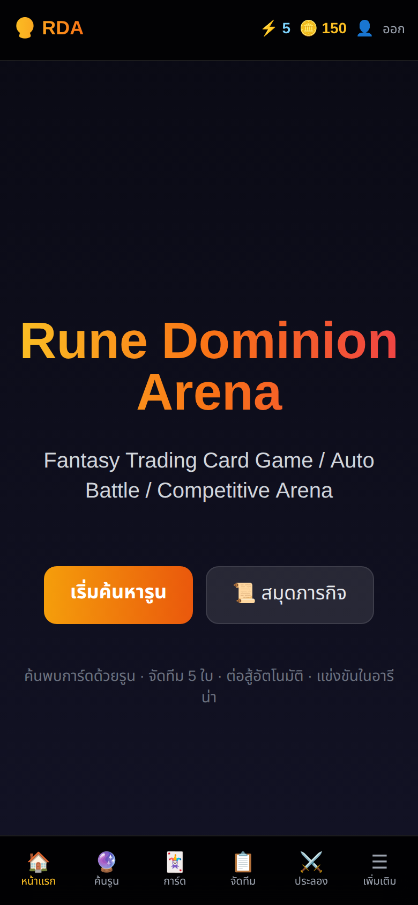
คู่มือเล่มนี้เรียงตามลำดับที่ผู้เล่นใหม่ควรเจอจริง: สมัคร → ค้นการ์ด → จัดทีม → ต่อสู้ → แข่งขัน → กิจกรรม → ปัญหาที่พบบ่อย
“ก่อนที่แผ่นดินจะมีชื่อ มีแสงเส้นหนึ่งพาดผ่านท้องฟ้า และทิ้งร่องรอยเป็นอักขระที่ไม่มีผู้ใดอ่านออก”
Rune Dominion Arena คือเกมการ์ดแฟนตาซีบนเว็บที่เล่นบนมือถือเป็นหลัก ผู้เล่นไม่ได้ซื้อแพ็กการ์ด แต่ “ค้นพบ” การ์ดด้วยการเลือกอักขระรูนบนกระดานขนาด 100×100 จากนั้นนำการ์ด 5 ใบมาจัดทีม ต่อสู้แบบอัตโนมัติ (Auto Battle) และแข่งขันกันในอารีน่าที่มีอายุห้องละ 24 ชั่วโมง
อักขระโบราณที่เรียกว่า “อักษรแรกเริ่ม” ไม่ได้บันทึกแค่คำพูด แต่เก็บเศษเสี้ยวของผู้กล้า สัตว์อสูร และคำสาบานที่ยังไม่เสื่อมสลายไว้ภายใน ผู้ที่สัมผัสลำดับรูนได้ถูกเรียกว่า Rune Seeker พวกเขาปลุก Echo (ร่องรอยที่หลับใหล) ให้กลับมาในรูปของการ์ด
แต่ยิ่งมีผู้ค้นพบมากเท่าไร ความจริงก็ชัดขึ้นว่า อักษรแรกเริ่มไม่ได้แตกสลายเพราะอุบัติเหตุ — และบางส่วนของมันอาจกำลังเรียกสิ่งที่ถูกผนึกไว้ให้ตื่นขึ้นอีกครั้ง ในฤดูกาลนี้ รอยแยกแห่งเงา เปิดออกเหนือ Aetherra และประตูไร้จันทร์เริ่มส่งเสียงเรียก (บทที่ 13)
| ขั้น | ทำอะไร | ได้อะไร |
|---|---|---|
| 1. ค้นรูน | เลือกรูน 8–16 จุด (ใช้พลังค้นหา 1) | การ์ด 1 ใบเข้าคอลเลกชัน |
| 2. จัดทีม | วางการ์ด 5 ใบลงวงแหวนบทบาท | คะแนนทีม + ทีมที่พร้อมรบ |
| 3. ต่อสู้ | ทดสอบเด็คกับบอท หรือท้าผู้เล่นในอารีน่า | ความคืบหน้าภารกิจ · Coin · อันดับ |
| 4. รับรางวัล | กดรับรางวัลภารกิจ · แชมป์อารีน่า · Milestone กิจกรรม | Coin · Veil Shards · ของสะสม |
| 5. กลับไปค้นรูน | ใช้พลังค้นหาที่เติมวันละ 5 | การ์ดใหม่/ใบซ้ำ และทีมที่แข็งขึ้น |
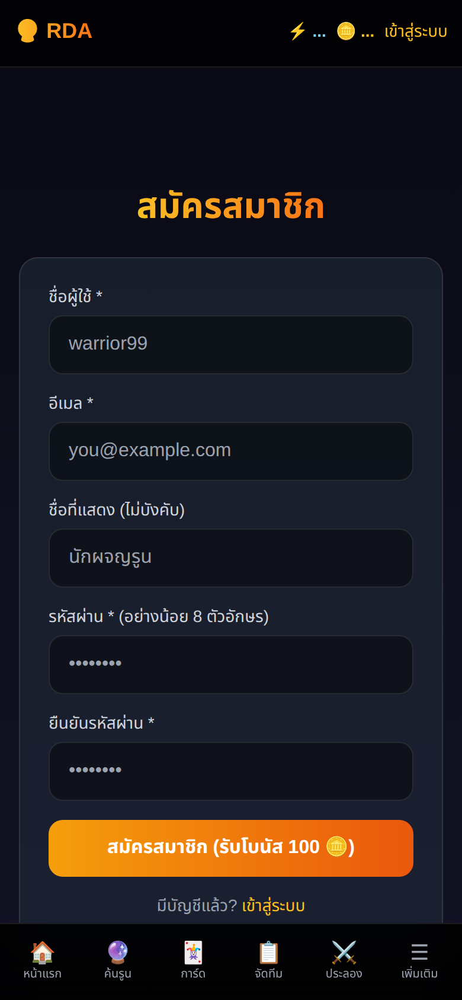
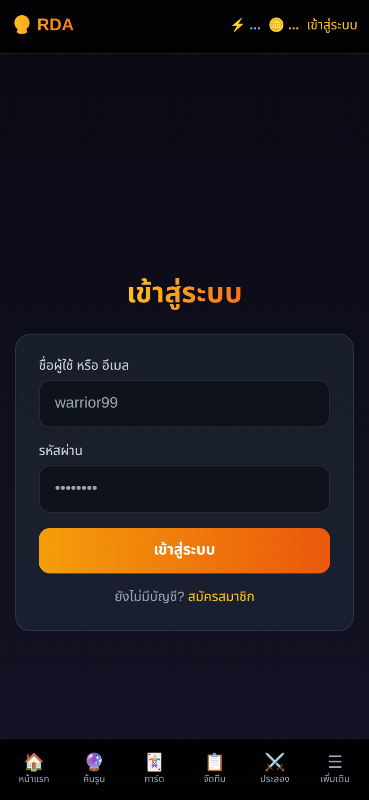
หลังเข้าสู่ระบบครั้งแรก เกมจะพาทำจริง 4 ขั้น: ค้นรูนใบแรก → ดูคอลเลกชัน → จัดทีม 5 ใบ → ต่อสู้กับบอทหนึ่งครั้ง ถ้าข้ามไปแล้วอยากดูซ้ำ ไปที่ ⚙️ ตั้งค่า → เปิดคู่มือเริ่มต้นอีกครั้ง
เกมมีเมนูทั้งหมดตามนี้ (บนมือถือเห็น 5 เมนูแรกที่แถบล่าง ส่วนที่เหลืออยู่ในปุ่ม ☰ เพิ่มเติม)
| เมนู | ทำอะไรได้ |
|---|---|
| 🏠 หน้าแรก | ภาพรวมและทางเข้าทุกโหมด |
| 🔮 ค้นรูน | ถอดรหัสรูน 8–16 จุด (ใช้พลังค้นหา) |
| 📋 จัดทีม | สร้าง/แก้ทีม 5 ใบ และ คลังการ์ด (กรองตามบทบาท/ธาตุ/ระดับหายาก) — บทที่ 7 |
| ⚔️ ประลอง | อารีน่า 24 ชม. — เปิดห้อง/ส่งทีมเข้าห้อง |
| 🎯 ทดสอบทีม | ซ้อมกับบอท ไม่เสีย Coin |
| 🛠️ ร้านช่าง | คราฟต์/ซื้อไอเทม (แท็บ 🧪 คราฟต์) และตีบวกไอเทม (แท็บ 🛠 ตีบวก) — บทที่ 17 |
| 🏰 ดันเจี้ยน | ลุยดันเจี้ยน 5 แห่งเพื่อหาวัตถุดิบ — บทที่ 15 |
| 🗺️ แผนที่ | แผนที่ฟาร์ม 5 โซน เดินเก็บวัตถุดิบ — บทที่ 16 |
| 🏆 จัดอันดับ | ตาราง Ranking ผู้เล่น 7 หมวด — บทที่ 21 |
| 🔔 แจ้งเตือน | ศูนย์การแจ้งเตือนของบัญชีคุณ — บทที่ 22 |
| 💰 Coin | ยอด Coin และประวัติการได้/ใช้ Coin |
| 📜 ภารกิจ | ภารกิจรายวัน/รายสัปดาห์/สะสม |
| 🌙 กิจกรรม | กิจกรรมฤดูกาลและ Boss Raid |
| 🎒 คลัง (กระเป๋า) | เงิน · ไอเทมช่างที่ถืออยู่ · ของสะสมจากกิจกรรม — บทที่ 18 |
| ⚙️ ตั้งค่า | ภาษา · เสียง · การแจ้งเตือน · ช่วยเหลือ |
| 👤 โปรไฟล์ | ข้อมูลบัญชี · สถิติ · เลเวล · อวตาร · เครื่องประดับ · ฉายา — บทที่ 20 |
| 🛡️ แอดมิน | เห็นเฉพาะบัญชีผู้ดูแล — จัดการการ์ด/เควส/กิจกรรม/ผู้เล่น/ภาพ (บทที่ 23) |
บนมือถือ แถบล่างแสดง 5 เมนูหลัก (🏠 หน้าแรก · 🔮 ค้นรูน · 📋 จัดทีม · ⚔️ ประลอง · 🎯 ทดสอบทีม) ส่วนเมนูอื่นอยู่ในปุ่ม ☰ เพิ่มเติม — บนจอคอมพิวเตอร์แถบบนมีลิงก์เมนูหลักให้กดได้ทันที
กระดานรูนเป็นตารางอักขระขนาด 100×100 = 10,000 ตำแหน่ง แต่ละตำแหน่งมีค่าเป็นตัวเลข 0–9999 ผู้เล่น เลือกอักขระรูน 8–16 ตำแหน่ง (เกมจะจำว่าคุณเลือกรูนใดไว้บ้าง) แล้วกด “ถอดรหัสรูน” เพื่อปลุกการ์ดที่ผูกกับลำดับนั้น — ลำดับไหนเคยถูกค้นพบแล้ว จะให้การ์ดใบเดิมเสมอ
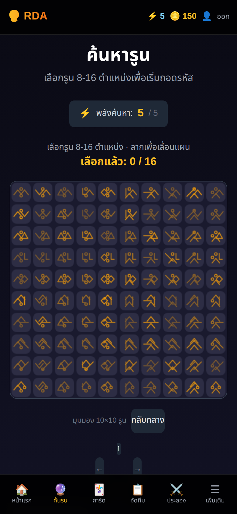
| หัวข้อ | รายละเอียด |
|---|---|
| เลือกกี่รูน | 8–16 จุด ต่อการค้นหา 1 ครั้ง (เลือกว่างหรือเกินไม่ได้) |
| ค่าใช้จ่าย | พลังค้นหา 1 หน่วย ต่อครั้ง (มี 5 หน่วย เติมอัตโนมัติเมื่อขึ้นวันใหม่) |
| ผลลัพธ์ | ตายตัว — รูนชุดเดิมให้การ์ดใบเดิมเสมอ ไม่ว่าจะค้นกี่ครั้งหรือโดยใคร |
| ค้นเจอการ์ดเดิม | ได้การ์ดใบเดิม และนับเป็น “อีกใบ” ในคลัง (×2, ×3, …) |
| ค้นพบเป็นคนแรก | ติดป้าย “ผู้ค้นพบคนแรก” พร้อมชื่อผู้ค้นพบในการ์ดใบนั้น |
| หลังถอดรหัส | กระดานล้างรูนที่เลือกให้อัตโนมัติ พร้อมค้นรอบใหม่ |
| ค้นพร้อมกันหลายคน | กดรัว ๆ ไม่ทำให้ได้การ์ดซ้ำซ้อน — 1 ครั้งที่ถอดรหัสคือนับ 1 การค้นพบเสมอ |
ทุกการ์ดสังกัดธาตุหนึ่งใน 6 ธาตุ และธาตุมีผลทั้งต่อสกิลในสนามรบและต่อ “คู่เปรียบธาตุ” (บทที่ 8)
| บทบาท | จุดเด่น |
|---|---|
| ⚔️ Warrior (นักรบ) | สมดุลระหว่างโจมตีและความทน เหมาะกับช่อง “โจมตี” |
| 🔮 Mage (จอมเวท) | พลังโจมตีสูง มักมาแพร์กับสกิลที่ใช้มานาเยอะ |
| 💚 Healer (ผู้เยียวยา) | เน้นความอยู่รอดของทีม |
| 🛡️ Tank (ผู้พิทักษ์) | DEF/HP สูง เหมาะกับช่อง “ป้องกัน” |
| 🗡️ Assassin (นักฆ่า) | SPD สูง ออกก่อนใครในรอบนั้น |
| ✨ Support (สนับสนุน) | ค่าสกิลดี เหมาะกับช่อง “สนับสนุน” |
การ์ดที่มีบทบาท “ตรงกับช่อง” ที่วางจะได้ โบนัสความชำนาญ +10% ของโบนัสช่องนั้น (รายละเอียดบทที่ 7)
| ระดับ | โอกาสเจอ (ต่อการ์ดใหม่ 1 ใบ) | ช่วง ATK ที่เป็นไปได้ | ช่วง HP ที่เป็นไปได้ |
|---|---|---|---|
| Common (ทั่วไป) | 40% | 20–69 | 50–149 |
| Uncommon (ไม่ธรรมดา) | 30% | 24–82 | 60–178 |
| Rare (หายาก) | 15% | 30–103 | 75–223 |
| Epic (มหากาพย์) | 9% | 36–124 | 90–268 |
| Legendary (ตำนาน) | 4% | 44–151 | 110–327 |
| Mythic (เทพนิยาย) | 2% | 56–193 | 140–417 |
ระดับที่สูงกว่าจะได้ค่าพลังที่สูงกว่าอย่างชัดเจน — แต่ SPD (ความเร็ว, 10–39) และ ค่าร่ายสกิล (2–9) ไม่ได้สูงตามระดับ การ์ดระดับสูงจึงยังมีตัวที่ออกช้ากว่าการ์ดธรรมดาได้
| ค่า | ความหมายในสนามรบ |
|---|---|
| ATK | พลังโจมตี — ใช้เป็นฐานของดาเมจทุกครั้ง |
| DEF | ลดดาเมจที่ได้รับ ผ่านสูตร 100/(100+DEF) — ยิ่งสูงยิ่งลดดาเมจได้มาก (แบบลดหลั่น ไม่ใช่ลบตรง ๆ) |
| HP | พลังชีวิต — หมดแล้วการ์ดนั้นออกจากสนาม |
| SPD | ความเร็ว — เรียงลำดับการออกแอ็กชันภายในรอบ (สูงกว่าออกก่อน) |
| ค่าร่ายสกิล (MP) | ใช้เป็น “น้ำหนักพลังสกิล” และเป็นส่วนหนึ่งของคะแนนทีมในช่องสนับสนุน |
| สกิล 1–2 อย่าง | ข้อมูลประจำการ์ด (ชื่อ+คำอธิบาย) ใช้บอกเอกลักษณ์ของใบนั้น และใช้คิดคะแนนช่องสนับสนุน |
| ชื่อการ์ด | ธาตุ · บทบาท | ระดับ | ATK | DEF | HP | SPD | MP |
|---|---|---|---|---|---|---|---|
| สูงส่งทิววดี ผู้ถือดาบอรุณ | แสง · นักรบ | Epic | 36 | 75 | 178 | 38 | 9 |
| วีรอาธาร นักปราชญ์กระแสน้ำ | น้ำ · จอมเวท | Legendary | 72 | 83 | 198 | 10 | 4 |
| ปฐมทิวภา ผู้ไร้เสียงแสงทอง | แสง · นักฆ่า | Mythic | 103 | 78 | 210 | 25 | 5 |
ตัวอย่างการ์ดจริงในเกม — จะเห็นว่าระดับสูงกว่ายังมี SPD ต่ำกว่าได้ จึงต้องดูหลายค่าประกอบกัน ไม่ใช่ดูแค่ระดับความหายาก
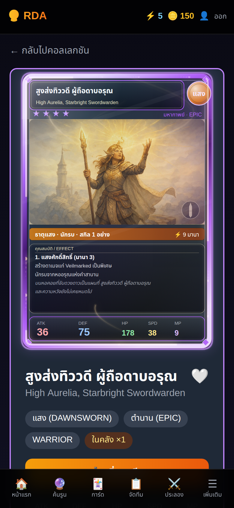
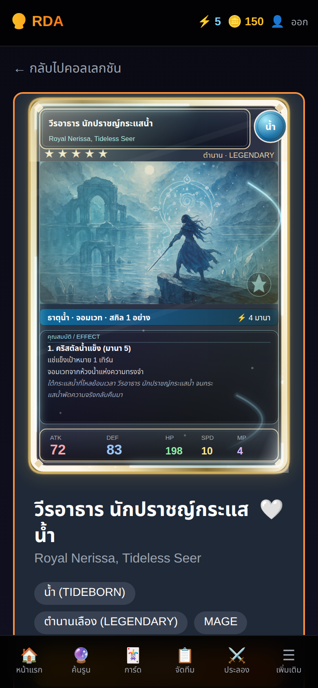
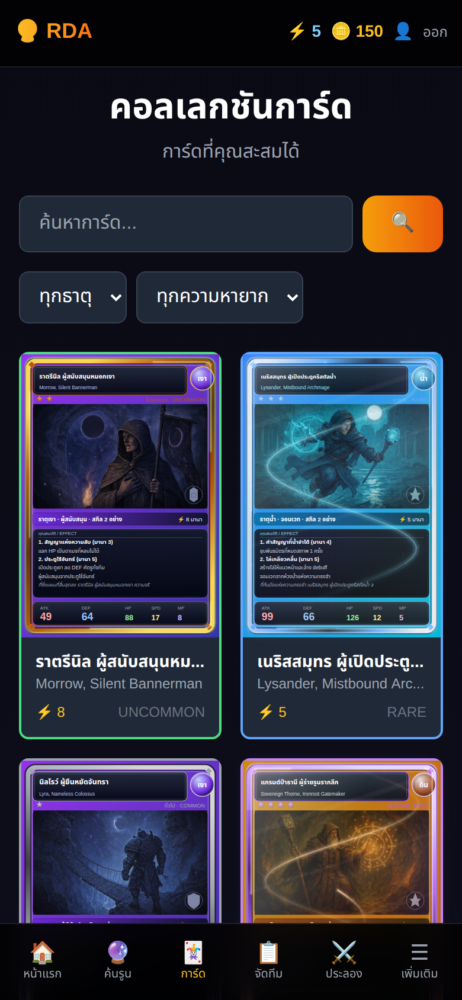
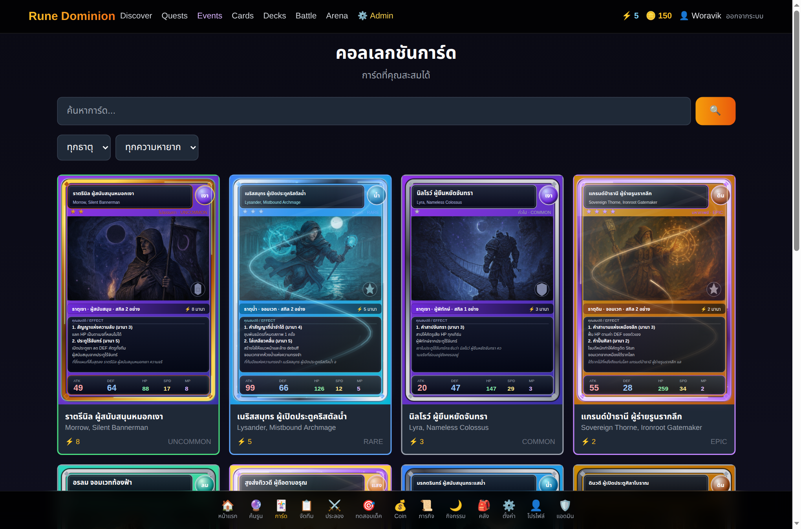
| ปุ่ม / ข้อมูล | ความหมาย |
|---|---|
| ⭐ ปักหมุด (โปรด) | ทำเครื่องหมายการ์ดที่ชอบไว้ดูง่าย — เป็นค่าส่วนตัวของคุณเท่านั้น |
| ➕ เพิ่มลงทีม | ให้เกมหาที่ให้การ์ดใบนี้ในทีมให้อัตโนมัติ — ถ้าทีมยังไม่ครบ 5 ใบและไม่ผิดกติกา จะเติมเข้าทีมนั้น · ถ้าไม่มีทีมที่ใส่ได้ จะสร้างทีมใหม่ 5 ใบให้ |
| จำนวนเจ้าของ | บอกว่ามีผู้เล่นกี่คนที่ถือการ์ดใบนี้ และใครเป็น “ผู้ค้นพบคนแรก” |
| เนื้อเรื่อง (Lore) | เรื่องเล่าสั้นของการ์ดใบนั้น — ของสะสมสำหรับผู้ที่ตามเนื้อเรื่อง Aetherra |
การ์ดทุกใบมี “หน้าตา” ของตัวเองที่สร้างจากข้อมูลการ์ดจริง (ธาตุ · บทบาท · ระดับหายาก · แฮชของรูน) จึงไม่มีการ์ดใบไหนหน้าตาซ้ำกันแบบสุ่ม และถ้าค้นพบการ์ดใบเดิมจะได้ภาพเดิมเสมอ
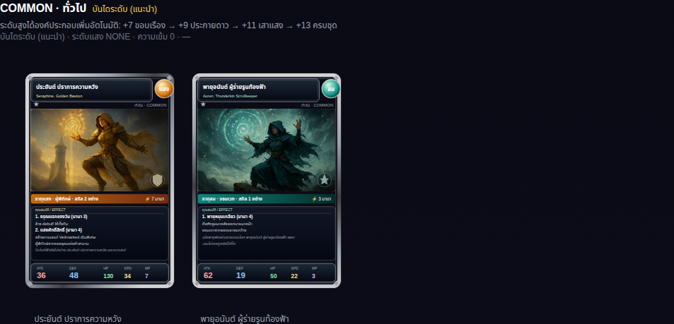
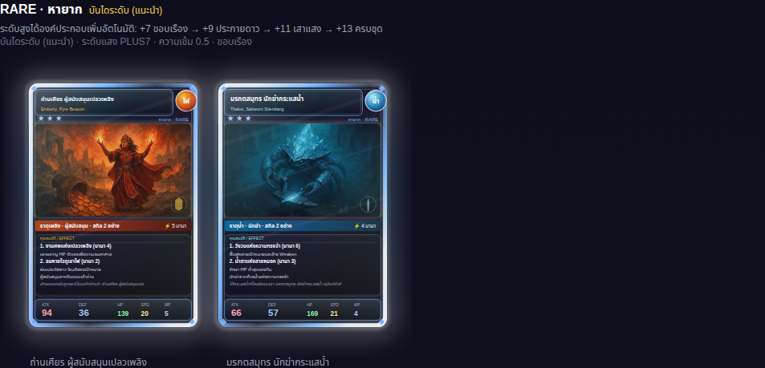
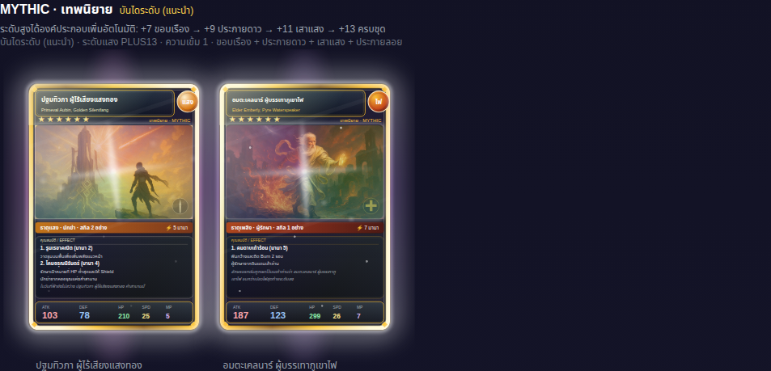
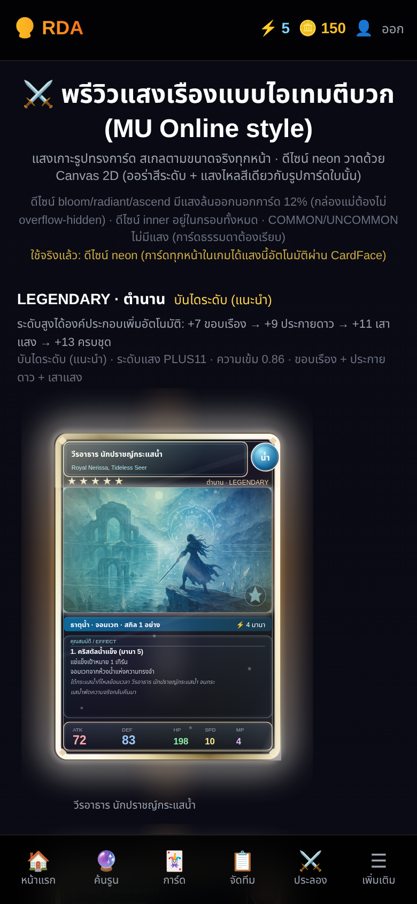
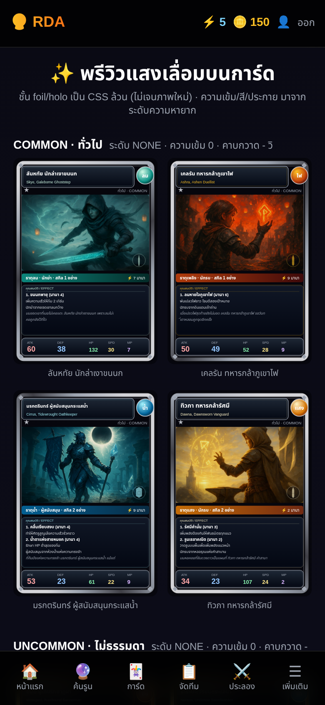
| กติกา | รายละเอียด |
|---|---|
| จำนวนการ์ด | 5 ใบ ต่อทีม (ตำแหน่ง 0–4) |
| การ์ดซ้ำ | ห้ามใช้การ์ดใบเดียวกันซ้ำในทีมเดียว (ใบซ้ำในคลังไม่ช่วยให้ใส่ได้ 2 ช่อง) |
| ธาตุ | ธาตุเดียวกันได้ไม่เกิน 3 ใบ — ต้องมีอย่างน้อย 2 ธาตุในทีม |
| ความเป็นเจ้าของ | ใส่ได้เฉพาะการ์ดที่คุณถือครองเท่านั้น |
| จำนวนทีม | สร้างได้หลายทีม (เก็บทีมสำรองไว้ใช้ต่างสถานการณ์) |
| การจัดวาง | มือถือ: แตะเพื่อวาง · คอมพิวเตอร์: ลากวาง (drag & drop) |
ช่องทั้ง 5 เรียงเป็นวงกลม แต่ละช่องมี “บทบาท” ที่ให้โบนัสต่างกัน:
| ตำแหน่ง | บทบาทช่อง | คะแนนเพิ่มจาก | เรต | การ์ดที่เข้าช่องได้โบนัส +10% |
|---|---|---|---|---|
| 0 และ 1 | ⚔️ โจมตี (Attack) | ค่า ATK ของการ์ด | ×1.0 | นักรบ · จอมเวท · นักฆ่า |
| 2 และ 3 | 🛡️ ป้องกัน (Defense) | ค่า DEF ของการ์ด | ×1.2 | ผู้พิทักษ์ · นักรบ |
| 4 | ✨ สนับสนุน (Support) | พลังสกิล (จากค่ามานาของสกิล) | ×1.6 | สนับสนุน · ผู้เยียวยา · จอมเวท |
ทั้งสามช่องให้คะแนนใกล้เคียงกันโดยเฉลี่ย — ช่องโจมตีเหมาะกับการ์ด ATK สูง · ช่องป้องกันเหมาะกับการ์ด DEF สูง · ช่องสนับสนุนเหมาะกับการ์ดที่มีสกิลใช้มานาแพง วางให้ตรงกับจุดแข็งของการ์ดจะได้คะแนนดีที่สุด
หน้าจัดทีมสรุปกำลังทีมเป็นแผนภาพ 6 แกน เทียบกับค่าอ้างอิงของ “ทีมระดับบน” ดังนี้
| แกน | ค่าอ้างอิงเต็มวง | อ่านอย่างไร |
|---|---|---|
| ATK โจมตี | 600 | ผลรวม ATK ของ 5 ใบ |
| DEF ป้องกัน | 450 | ผลรวม DEF |
| HP พลังชีวิต | 1,300 | ผลรวม HP |
| SPD ความเร็ว | 200 | ผลรวม SPD |
| MP มานา | 45 | ผลรวมค่าร่ายสกิล |
| SKL พลังสกิล | 250 | ผลรวมพลังสกิล (ค่ามานา × 3 + 6 ต่อสกิล) |
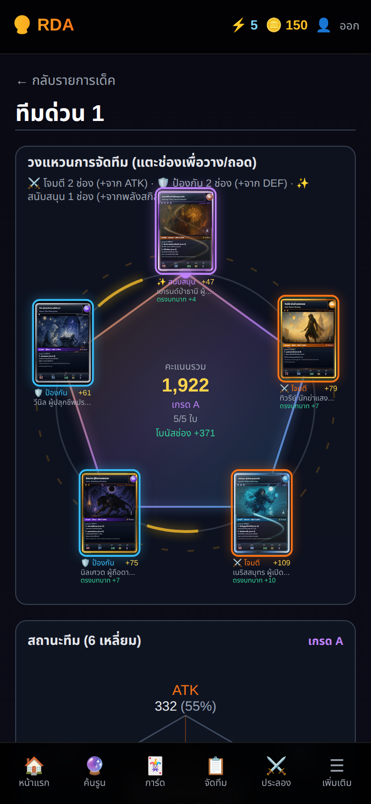
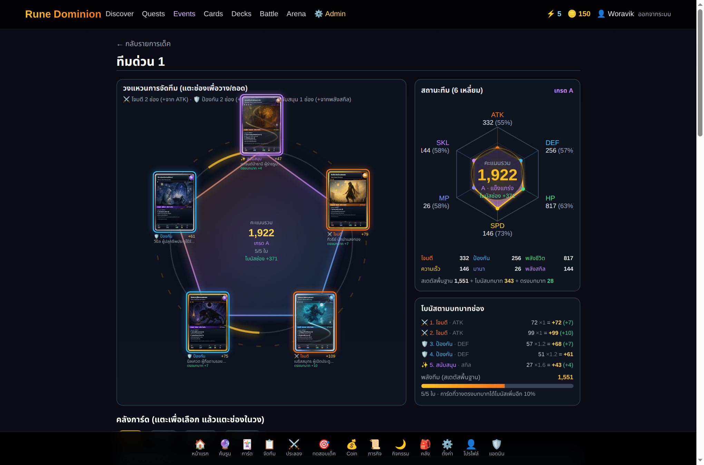
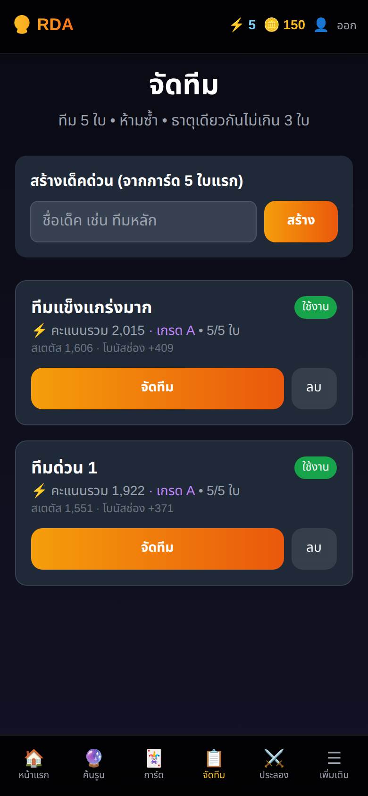
ใต้ “วงแหวนการจัดทีม” จะมี คลังการ์ด รวมการ์ดทุกใบที่คุณถืออยู่ ใช้เลือกการ์ดเข้าช่องในวง ด้านบนคลังมีชุดตัวกรองสำหรับหาการ์ดที่ต้องการได้เร็ว:
| ตัวกรอง / ปุ่ม | ใช้ทำอะไร |
|---|---|
| บทบาท: ทั้งหมด · ⚔️ โจมตี · 🛡️ ป้องกัน · ✨ สนับสนุน | แสดงเฉพาะการ์ดที่ “เข้าช่อง” บทบาทนั้นได้ (ตามบทบาทการ์ด) |
| ธาตุ: ทุกธาตุ · 🔥 เพลิง · 💧 น้ำ · 🌪️ ลม · 🪨 ดิน · ✨ แสง · 🌑 เงา | แสดงเฉพาะการ์ดธาตุที่เลือก |
| ระดับหายาก: ทุกระดับ · ทั่วไป · ไม่ธรรมดา · หายาก · มหากาพย์ · ตำนาน · เทพนิยาย | แสดงเฉพาะการ์ดระดับที่เลือก |
| ☐ ซ่อนใบที่อยู่ในทีมแล้ว | ซ่อนการ์ด 5 ใบที่วางอยู่ในวงแล้ว — เหลือเฉพาะใบที่ยังเลือกได้ (เปิด/ปิดได้) |
| ช่องค้นหาชื่อการ์ด | พิมพ์ชื่อไทยหรืออังกฤษเพื่อกรองทันที |
| ตัวนับ “แสดง N/M ใบ” | บอกว่ากรองเหลือกี่ใบจากทั้งหมดกี่ใบ |
การกดการ์ดในคลังจะเปิด “ชีตจัดการ” ให้ดูรายละเอียดการ์ด+ไอเทมที่ใส่ · ส่งเข้าทีม · หรือขายคืนร้าน (ขายได้เฉพาะการ์ดที่อยู่นอกทีม)
การต่อสู้ทั้งหมดเป็นแบบ อัตโนมัติ (Auto Battle) — ผู้เล่นไม่ได้กดสกิลเอง เมื่อเริ่มศึก เกมจะเล่นการรบ 5 ต่อ 5 ให้จนจบ แล้วให้คุณดูย้อนหลังได้ทุกแอ็กชัน ผลลัพธ์ขึ้นอยู่กับค่าสถิติ · ธาตุ · สกิล ของการ์ดทั้งสองฝ่ายเท่านั้น (ไม่ขึ้นกับความเร็วเน็ตหรือการกดของคุณ)
| กติกา | ค่า |
|---|---|
| รูปแบบ | 5 การ์ด ต่อ 5 การ์ด (Turn-Based Auto Battle) |
| จำนวนรอบสูงสุด | 30 รอบ |
| มานาเริ่มต้น | 0 |
| มานาที่ได้ต่อรอบ | +20 (สะสมได้สูงสุด 100) |
| เงื่อนไขใช้สกิล | เมื่อมานาถึง 50 → ใช้สกิลประจำธาตุ (หักมานา 50) มิฉะนั้นใช้โจมตีปกติ |
| เป้าหมายการโจมตี | ศัตรูที่เหลือซึ่งมี SPD ต่ำสุด (ตีตัวที่ออกช้าสุดก่อน) |
| เป้าหมายการรักษา | เพื่อนร่วมทีมที่มี HP เหลือน้อยสุด |
แต่ละรอบ ทุกการ์ดที่ยังไม่หมดสภาพจะออกแอ็กชันทีละใบ เรียงจากความเร็ว (SPD) มากไปน้อย ถ้า SPD เท่ากันจะเรียงตามลำดับที่คงที่ของเกม (ไม่ใช่การสุ่ม) การ์ดที่ติดสถานะ “ว่องไว” จะได้ SPD เพิ่มชั่วคราว +10
ดาเมจของการโจมตี 1 ครั้งคิดจาก 4 ปัจจัยเรียงกัน
ถ้าโจมตีด้วยสกิล ดาเมจจะแรงขึ้น ×1.5 · ถ้าเป้าหมายมีโล่อยู่ ดาเมจที่ได้รับจะลดลง 30% · และดาเมจทุกครั้งมี ขั้นต่ำ 1 เสมอ
| ธาตุที่โจมตี | ได้เปรียบ (+15%) ต่อ | เสียเปรียบ (−10%) เมื่อสู้กับ |
|---|---|---|
| 🔥 เพลิง (Emberbound) | 🌪️ ลม | 💧 น้ำ |
| 🌪️ ลม (Skyriven) | 🪨 ดิน | 🔥 เพลิง |
| 🪨 ดิน (Rootforged) | 💧 น้ำ | 🌪️ ลม |
| 💧 น้ำ (Tideborn) | 🔥 เพลิง | 🪨 ดิน |
| ☀️ แสง (Dawnsworn) | 🌑 เงา | 🌑 เงา |
| 🌑 เงา (Veilmarked) | ☀️ แสง | ☀️ แสง |
สังเกตว่า แสง ↔ เงา เป็นคู่ที่ “ได้เปรียบกันทั้งสองทาง” — ใครโจมตีคนนั้นได้โบนัส จึงเป็นคู่ที่ดุเดือดที่สุดในสนาม
ในสนามรบ ทุกการ์ดจะใช้สกิลของ ธาตุที่การ์ดสังกัด เมื่อมานาถึง 50 — สกิลจึงเป็นเหตุผลสำคัญที่ทำให้ “ธาตุ” มีค่ามากกว่าตัวเลขดิบ
| ธาตุ | สกิล | ผลจริงในสนาม |
|---|---|---|
| 🔥 เพลิง | เผาไหม้ | โจมตีแรงขึ้น ×1.5 และติดสถานะ เผาไหม้ ให้เป้า (สะสมได้สูงสุด 3 ชั้น) |
| 🌑 เงา | คำสาปเงา | โจมตีแรงขึ้น ×1.5 และทำให้เป้า อ่อนแอ (ATK −20%) 3 รอบ |
| 💧 น้ำ | เยียวยา | ฟื้น HP ให้เพื่อนที่เลือดน้อยสุด 20% ของ HP สูงสุด ของใบนั้น |
| ☀️ แสง | เยียวยา | เหมือนน้ำ (ฟื้น HP 20% ให้เพื่อนที่เลือดน้อยสุด) |
| 🪨 ดิน | โล่หิน | ติด โล่ ให้ตัวเอง ลดดาเมจที่รับ 30% เป็นเวลา 2 รอบ |
| 🌪️ ลม | ว่องไว | ได้ SPD +10 เป็นเวลา 3 รอบ (ออกแอ็กชันก่อนคู่แข่ง) |
| สถานะ | ผล | ระยะเวลา |
|---|---|---|
| 🔥 เผาไหม้ (Burn) | เสีย HP 5% ของ HP สูงสุด ต่อชั้น ตอนเริ่มเทิร์นของตัวเอง — สูงสุด 3 ชั้น = 15% ต่อเทิร์น | สูงสุด 3 ชั้น |
| 💧 อ่อนแอ (Weaken) | ATK ลดลง 20% | 3 รอบ |
| 🛡️ โล่ (Shield) | ดาเมจที่รับลดลง 30% | 2 รอบ |
| ⚡ ว่องไว (Haste) | SPD +10 (เทียบเท่า +20% ของความเร็วฐาน เพราะสกิลนี้ไม่คูณตามระดับ) | 3 รอบ |
นี่คือบันทึกจริงจากศึกหนึ่งในเกม (ตัดมาเฉพาะช่วงต้น) — อ่านจากบนลงล่างคือลำดับที่เกิดขึ้นจริง
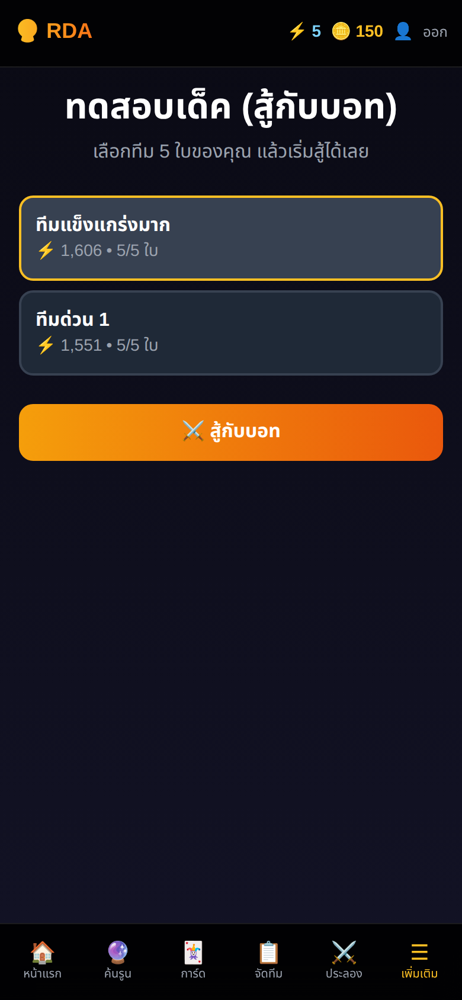
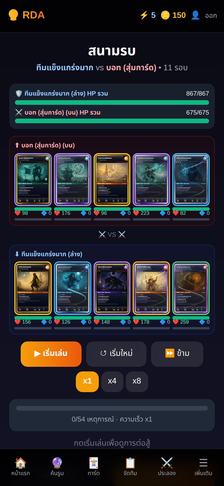
| สิ่งที่เห็น | ความหมาย |
|---|---|
| การ์ดแถวบน / แถวล่าง | แถวบน = คู่ต่อสู้ · แถวล่าง = ทีมของคุณ |
| แถบ HP/MP ใต้การ์ด | HP เหลืออยู่ และมานาที่สะสม (มานาถึง 50 = พร้อมใช้สกิล) |
| ⚔️ กลางการ์ด | การ์ดใบนี้คือ “ผู้โจมตี” ในแอ็กชันปัจจุบัน |
| 🛡️ + กรอบแดงกลางการ์ด | การ์ดใบนี้คือ “ผู้รับการโจมตี” ในแอ็กชันปัจจุบัน |
| 💀 | การ์ดที่หมดสภาพแล้ว (จะแสดงเป็นสีเทา) |
| ไอคอนสถานะ | 🔥 เผาไหม้ / 💧 อ่อนแอ / 🛡️ โล่ / ⚡ ว่องไว พร้อมเลขจำนวนชั้น/เทิร์นที่เหลือ |
| แถบ HP รวมสองทีม | ใช้ดูภาพรวมว่าใครนำอยู่ |
| กล่องข้อความ | log ล่าสุดอยู่ด้านบนสุด (อ่านจากบนลงล่าง = เหตุการณ์ใหม่ → เก่า) |
| ปุ่ม | ทำอะไร |
|---|---|
| ▶️ เริ่มเล่น / ⏸️ หยุด | เล่นหรือหยุดเทปการต่อสู้ |
| 🔁 เริ่มใหม่ | ย้อนกลับไปเล่นเทปตั้งแต่ต้น |
| ⏭️ ข้าม | ข้ามไปยังช่วงที่สนใจ |
| x1 / x4 / x8 | ปรับความเร็วการเล่นเทป (ดูรวบรัดก็เลือก x8) |
อารีน่าคือโหมดแข่งขันแบบ “ห้องมีอายุจำกัด” ผู้เล่นคนหนึ่ง เปิดห้อง และตั้งทีมป้องกัน 5 ใบ คนอื่นเข้ามาท้าด้วยการ ส่งทีมเข้าห้อง ใครชนะล่าสุดจะได้เป็น แชมป์ (Champion) ของห้องนั้น เมื่อครบ 24 ชั่วโมง ระบบจะจ่ายรางวัลให้แชมป์ผู้ครองอันดับ 1
| รายการ | ค่า |
|---|---|
| ค่าเปิดห้อง (เจ้าของห้อง) | 30 Coin |
| คูลดาวน์ระหว่างเปิดห้อง | 5 นาที |
| ค่าเข้าห้อง / ส่งทีมเข้าห้อง | 10 Coin (คิดทุกครั้งที่ส่งทีมเข้าห้อง) |
| เพดานการเข้าห้อง | 20 ครั้ง/วัน (นับจากการหัก Coin จริง) |
| อายุห้อง | 24 ชั่วโมง |
| ผู้เข้าร่วมสูงสุดต่อห้อง | 50 คน |
| รางวัลฐาน | 100 Coin |
| โบนัสต่อผู้เข้าร่วม | +5 Coin ต่อ 1 คน (นับคนไม่ซ้ำ) |
| รางวัลสูงสุด | 500 Coin |
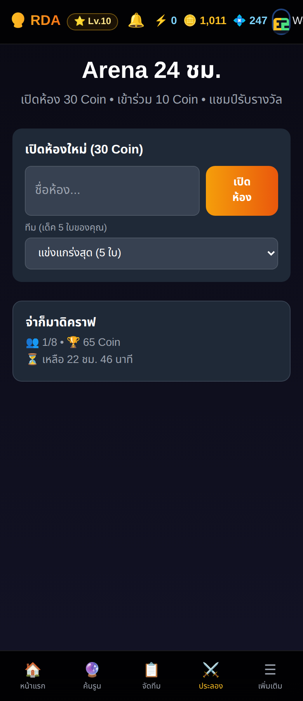
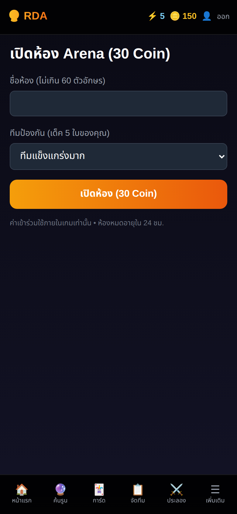
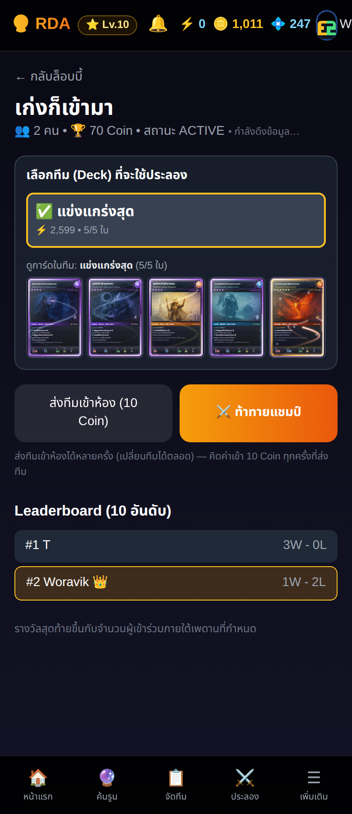
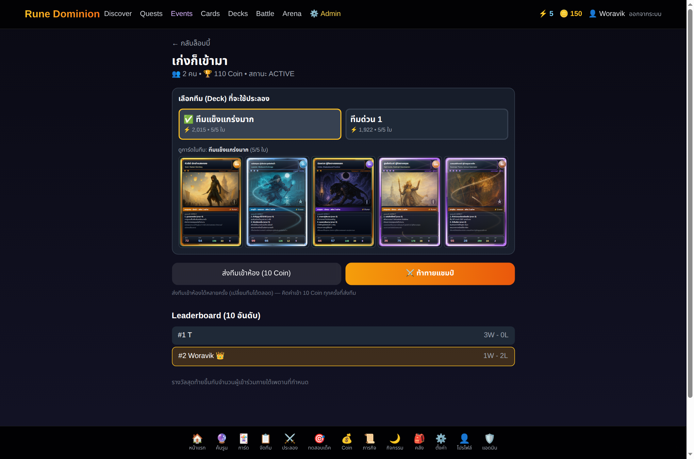
| ประเภท | รอบการรีเซ็ต | หมายเหตุ |
|---|---|---|
| รายวัน (Daily) | เที่ยงคืนของทุกวัน (เวลาเดียวกันทั้งเกม) | ทำวันละรอบ อย่าลืมกดรับก่อนหมดวัน |
| รายสัปดาห์ (Weekly) | วันจันทร์ | ให้รางวัลมากกว่า ต้องสะสมทั้งสัปดาห์ |
| สะสม (Achievement) | ไม่รีเซ็ต | เป้าใหญ่ ให้รางวัลสูงสุด |
| ภารกิจ | ต้องทำอะไร | เป้า | รางวัล (Coin) |
|---|---|---|---|
| ค้นหารูนประจำวัน | ค้นพบการ์ดภายในวันนี้ | 3 ครั้ง | 30 |
| ฝึกฝนประจำวัน | ต่อสู้ภายในวันนี้ | 2 ครั้ง | 20 |
| ชนะประจำวัน | ชนะการต่อสู้ภายในวันนี้ | 1 ครั้ง | 40 |
| นักสำรวจประจำสัปดาห์ | ค้นพบการ์ดภายในสัปดาห์นี้ | 15 ครั้ง | 120 |
| นักสู้ประจำสัปดาห์ | ชนะการต่อสู้ภายในสัปดาห์นี้ | 10 ครั้ง | 200 |
| ราชันอารีน่าประจำสัปดาห์ | คว้าแชมป์อารีน่า | 1 ครั้ง | 250 |
| นักปราชญ์แห่งรูน (สะสม) | ค้นพบการ์ดรวมกัน | 50 ครั้ง | 500 |
| ดาบไร้เทียมทาน (สะสม) | ชนะการต่อสู้รวมกัน | 100 ครั้ง | 1,000 |
รวมรางวัลภารกิจรายวันสูงสุด = 90 Coin/วัน · รายสัปดาห์ = 570 Coin/สัปดาห์ (ถ้าทำครบทุกใบ)
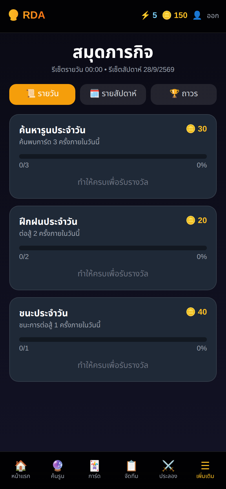
| ทรัพยากร | ใช้ทำอะไร | ได้จาก |
|---|---|---|
| Coin 🪙 | ค่าเปิดห้อง/ค่าเข้าห้องอารีน่า · ค่าเข้าดันเจี้ยนเหรียญ (35) · คราฟต์และตีบวกไอเทมที่ร้านช่าง · ของในร้านค้าบางรายการ | โบนัสสมัคร 100 · ภารกิจ · รางวัลแชมป์อารีน่า · ขึ้นเลเวล (12 + 2×เลเวล) · Milestone กิจกรรม · ขายไอเทมคืนร้าน (50%) · ร้านค้ากิจกรรม (แลก Veil Shards เป็น Coin) |
| Veil Shards 💠 | ค่าเข้า Boss Raid (10 ชิ้น) · ซื้อ/คราฟต์ไอเทมที่ร้านช่าง · ของในร้านค้ากิจกรรม | ขายการ์ดคืนร้าน (ตามความหายาก) · ดันเจี้ยน · แผนที่ฟาร์ม · ภารกิจกิจกรรม · รางวัล Milestone · เข้า Raid ทุกครั้ง (แม้แพ้) |
| ฝุ่นเวท ✨ (Crafting Dust) | วัตถุดิบคราฟต์ไอเทมและตีบวกไอเทมที่ร้านช่าง | ดันเจี้ยน · แผนที่ฟาร์ม · Milestone กิจกรรม · เป้าหมายชุมชน |
| ทางเข้า (รายรับ) | จำนวน | ทางออก (รายจ่าย) | จำนวน |
|---|---|---|---|
| โบนัสสมัครสมาชิก | 100 Coin | เปิดห้องอารีน่า | 30 Coin |
| ภารกิจรายวันครบ (3 ใบ) | 90 Coin/วัน | ส่งทีมเข้าห้องอารีน่า (ต่อครั้ง) | 10 Coin |
| ภารกิจรายสัปดาห์ครบ | 570 Coin/สัปดาห์ | ค่าเข้า Boss Raid | 10 Veil Shards |
| แชมป์อารีน่า | 100–500 Coin/ห้อง | ของในร้านค้ากิจกรรม | 15–100 Veil Shards |
| Milestone กิจกรรม (ระดับ 1) | 100 Coin | — | — |
| แลก Veil Shards เป็น Coin (ร้านค้า) | 150 Coin : 15 Shards |
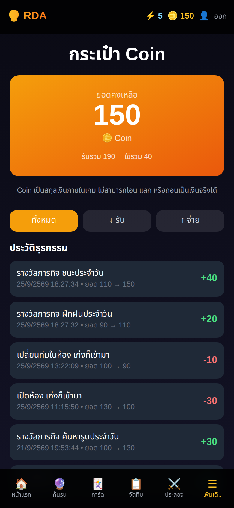
กิจกรรมฤดูกาลที่ 1 (Call of the Moonless Gate) คือช่วงเวลา 14 วัน บวกช่วงเก็บตกอีก 24 ชั่วโมง ธีมคือรอยแยกแห่งเงาที่เปิดขึ้นทั่ว Aetherra ผู้เล่นจะเก็บสกุลเงินกิจกรรม Veil Shards แล้วนำไปท้าบอสยักษ์เพื่อทำคะแนนสะสม ทั้งของตัวเองและของชุมชน
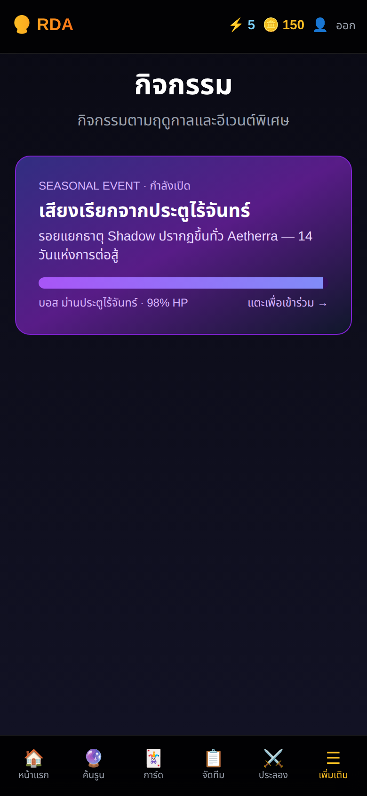
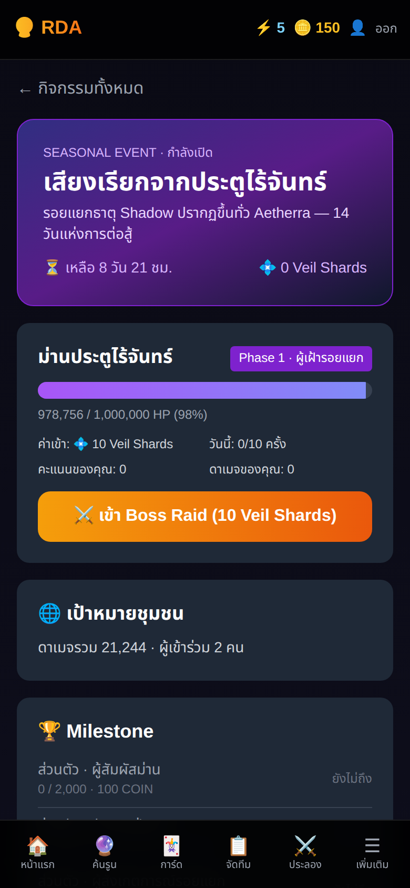
| รายการ | ค่า |
|---|---|
| ค่าเข้า Raid 1 ครั้ง | 10 Veil Shards |
| เพดานเข้า Raid | 10 ครั้ง/วัน |
| รางวัลปลอบใจ (เข้าแล้วแพ้/ทำดาเมจได้) | 2 Veil Shards |
| โบนัสเมื่อชนะบอส | +5 Veil Shards |
| โบนัสทีมที่ใช้ 4 ธาตุขึ้นไป | +10% คะแนนกิจกรรม (Event Points) |
| HP รวมของบอส (ทั้งชุมชนช่วยกันตี) | 1,000,000 HP |
| เฟส | ช่วง HP ของบอส | ชื่อ | ธาตุบอส | ความแข็ง |
|---|---|---|---|---|
| 1 | 100–76% | ผู้เฝ้ารอยแยก | 🪨 ดิน | เริ่มต้น |
| 2 | 75–51% | อัศวินสะท้อนเงา | 🌑 เงา | แข็งขึ้น |
| 3 | 50–26% | ม่านไร้จันทร์ | 🌑 เงา | แข็งมาก |
| 4 | 25–0% | เสียงสะท้อนแห่งรุ่งอรุณ | ☀️ แสง | แข็งที่สุด |
ทุกครั้งที่ท้าบอสจะเจอ 5 หน่วย — ตัวบอส 1 หน่วย + องครักษ์สะท้อนเงาอีก 4 หน่วยที่อ่อนกว่าเล็กน้อย จึงเป็นการรบ 5 ต่อ 5 ด้วยกติกาเดียวกับบทที่ 8 และบอสจะแข็งขึ้นเรื่อย ๆ เมื่อ HP รวมของทั้งชุมชนลดลง
| กลไก | ผลต่อดาเมจ | ธาตุที่รับมือได้ |
|---|---|---|
| Veil Shield | ดาเมจของคุณถูกลด 40% | ☀️ แสง → ลดเกราะเหลือ 20% (Dawn Resonance) |
| Moonless Mark | บอสรับดาเมจเพิ่ม +20% | 💧 น้ำ → ล้าง Mark (ไม่ได้โบนัสนี้ แต่กันไม่ให้บอสได้เปรียบ) |
| Ember Break | ดาเมจ +15% | 🔥 เพลิง (ตีทะลุเกราะ) |
| Rune Fracture | ทุกเทิร์นที่ 3 ดาเมจ +10% | — (เกิดตามจังหวะเทิร์น) |
| Eclipse Pulse | ทุกเทิร์นที่ 4 ดาเมจ +5% | — (จังหวะเทิร์น) |
| Rift Hunger | เมื่อบอสเหลือ <30% (เฟส 4) ดาเมจ +10% | — (ยิ่งตีดัน เฟส 4 ให้คะแนนมากกว่า) |
| Rooted Guard | ลดความเสียหายวงกว้างให้ทีมคุณ | 🪨 ดิน |
| Gale Shift | เพิ่มโอกาสหลบการโจมตีเป้าเดียว | 🌪️ ลม |
| Tide Cleanse | ล้าง Moonless Mark (ตามด้านบน) | 💧 น้ำ |
กลไกเหล่านี้คิดจาก ธาตุที่ทีมของคุณใช้ และ จำนวนเทิร์น เท่านั้น จึงวางแผนล่วงหน้าได้ — ตัวอย่าง: ทีมที่ใช้ทั้ง ☀️ แสง และ 🔥 เพลิง จะเจาะเกราะของบอสได้ดีที่สุด
| คะแนน | รางวัล |
|---|---|
| 2,000 | Coin 100 |
| 5,000 | Crafting Dust 50 (วัตถุดิบคราฟต์) |
| 10,000 | การ์ดกิจกรรม: ผู้สังเกตการณ์รอยแยก |
| 20,000 | กรอบอวาตาร์: ม่านไร้จันทร์ |
| 35,000 | ภาพศิลป์การ์ดแบบเงา (Shadow Card Art Variant) |
| 50,000 | การ์ดกิจกรรม: เซลิน ผู้ผนึกอรุณ |
| 75,000 | ฉายา: ผู้พิชิตประตูไร้จันทร์ |
| ดาเมจรวมของทุกคน | สิ่งที่ผู้เล่นทุกคนปลดล็อก |
|---|---|
| 1,000,000 | เนื้อเรื่องบทที่ 2 |
| 5,000,000 | Veil Shards 30 ให้ผู้เล่นทุกคน |
| 10,000,000 | เนื้อเรื่องบทที่ 3 + ของในร้านค้าเพิ่ม |
| 25,000,000 | แบนเนอร์ประดับ (Cosmetic Banner) |
| 50,000,000 | บทส่งท้าย + Crafting Dust 100 |
| สินค้า | ได้อะไร | ราคา (Shards) | ซื้อได้/คน |
|---|---|---|---|
| ถุง Coin | Coin 150 | 15 | 5 |
| ฝุ่นเวท | Crafting Dust 25 | 20 | 5 |
| เครื่องประดับม่าน | ของประดับธีมม่านไร้จันทร์ | 60 | 1 |
| ฉายา: ผู้เดินรอยแยก | ฉายาเฉพาะกิจกรรม | 100 | 1 |
| ภารกิจกิจกรรม | เป้า | รางวัล |
|---|---|---|
| สำรวจรอยแยก (รายวัน) | เข้าร่วม Raid 3 ครั้ง | Coin 30 + 5 Shards |
| นักสะสมเศษม่าน (รายสัปดาห์) | สะสม Veil Shards 50 ชิ้น | Coin 100 + 10 Shards |
| ผู้ทลายประตู (สะสม) | สร้างดาเมจรวม 50,000 | Coin 300 + 25 Shards |
บทเนื้อเรื่องจะปลดล็อกตามดาเมจรวมของชุมชน: บทที่ 1 (เปิดให้อ่านตั้งแต่เริ่ม) → บทที่ 2 ที่ 1M → บทที่ 3 ที่ 10M → บทส่งท้าย: เสียงสะท้อนแห่งรุ่งอรุณ ที่ 50M — เนื้อเรื่องที่ปลดล็อกจะถูกเก็บไว้ในคลัง (บทที่ 14)
ของที่ได้จากกิจกรรมและรางวัลพิเศษจะอยู่ใน 🎒 คลัง แยกเป็น 5 ประเภท และทุกชิ้นบอก “ที่มา” ว่ามาจากไหน ผู้เล่นจึงไม่ต้องเดาว่าได้มาจากอะไร
| ประเภท | ตัวอย่าง | ได้จาก |
|---|---|---|
| การ์ดพิเศษ | การ์ดฉลองกิจกรรม (เช่น ผู้สังเกตการณ์รอยแยก · เซลิน ผู้ผนึกอรุณ) | Milestone กิจกรรม |
| เครื่องประดับ | กรอบอวาตาร์ม่านไร้จันทร์ · แบนเนอร์ประดับ · ของประดับธีม | Milestone และร้านค้ากิจกรรม |
| ฉายา (Title) | ผู้พิชิตประตูไร้จันทร์ · ผู้เดินรอยแยก | Milestone ระดับสูง / ร้านค้า |
| วัตถุดิบ | ฝุ่นเวท (Crafting Dust) | Milestone · ร้านค้า · เป้าหมายชุมชน |
| บทเนื้อเรื่อง | บทที่ 1–3 และบทส่งท้าย | ดาเมจรวมของชุมชนถึงเป้า |
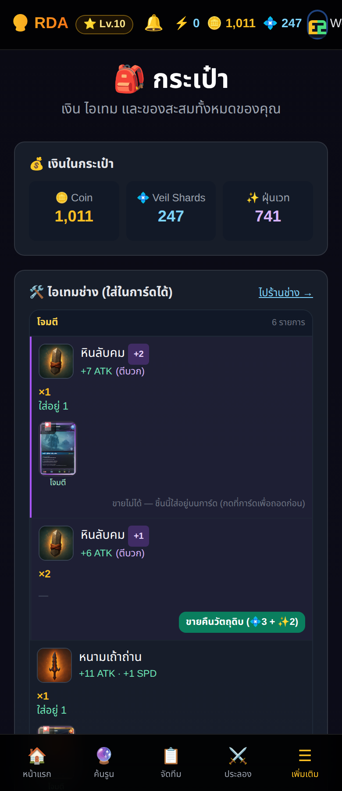
ดันเจี้ยนคือโหมดต่อสู้แบบ “ไล่ชั้น” เพื่อหา วัตถุดิบคราฟต์ไอเทม (✨ ฝุ่นเวท · 💠 Veil Shards · 🎁 ไอเทมช่าง) เข้าจากเมนู 🏰 ดันเจี้ยน (อยู่ในปุ่ม ☰ เพิ่มเติม บนมือถือ) · ต่อสู้ด้วยกติกาเดียวกับบทที่ 8 (Auto Battle 5 ต่อ 5) เมื่อกด “ลุย” เกมจะพาไปหน้าสนามรบจริงให้ดูการต่อสู้เต็ม แล้วกลับมาลุยชั้นถัดไปได้
| ดันเจี้ยน | วิธีเข้า | จำนวนชั้น | จุดเด่น |
|---|---|---|---|
| 🔥 สุสานเพลิง | เข้าฟรีตลอด | 25 | ดันฝึกหัด ฝุ่นเวทสำหรับของพื้นฐาน |
| 🌊 วิหารน้ำขึ้น | เข้าฟรีตลอด | 28 | ฝุ่นเวทหนาและของช่างระดับกลาง |
| 🌙 รอยแยกไร้จันทร์ | เข้าฟรีตามเวลา 12:00–14:00 และ 20:00–22:00 | 28 | ของกลาง-แรง |
| 💰 เหวลึกทองคำ | จ่าย 35 Coin เข้าได้ตลอด | 30 | ดรอปหนักที่สุด (ของคราฟต์ระดับสูง) |
| ⚡ ยอดหอพายุ | เข้าฟรีตามเวลา 18:00–20:00 | 40 | ดันสูงสุดที่ให้เข้าฟรี ของระดับตำนาน |
ดันตามเวลา (🌙 / ⚡) หน้าจอจะบอกสถานะสด: “เปิดฟรีอยู่ — เข้าได้ถึง HH:00 น.” หรือ “ปิดอยู่ — เข้าฟรี 12:00–14:00 และ 20:00–22:00” พร้อมนับถอยหลัง (“เปิดอีก N ชม. N น.”)
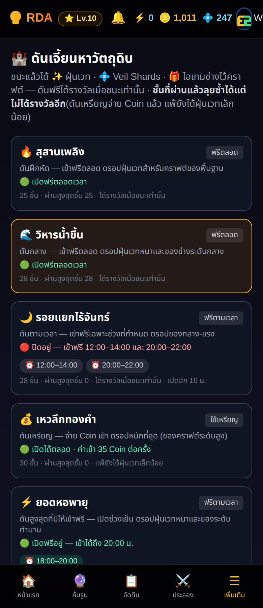
| รางวัล | ได้เมื่อ |
|---|---|
| ✨ ฝุ่นเวท · 💠 Veil Shards | ชนะชั้นที่ยังไม่เคยผ่าน (ชั้นที่ผ่านแล้ว = ไม่ได้) |
| 🎁 ไอเทมช่าง (มีโอกาสดรอป) | ชนะครั้งแรกของชั้นนั้น ๆ เท่านั้น (โอกาสดรอปต่างกันตามชั้น) |
| ✨ ฝุ่นเวทเล็กน้อย | เฉพาะดันเหรียญ (เหวลึกทองคำ) เมื่อแพ้ |
ชั้นของดันเจี้ยน ไล่ความยากขึ้นทุกชั้น (ปรับใหม่ 2026-10-08 — เดิมความยากจะเท่ากันเป็นช่วงละ 5 ชั้น แล้วกระโดดที่ชั้นแรกของช่วงถัดไป) ตอนนี้หน้าเลือกชั้นจะโชว์ตัวเลขที่เทียบกันได้ทันที:
| สัญลักษณ์บนจอ | ความหมาย |
|---|---|
| ⭐ ระดับ N/10 | ระดับความยากของชั้นนั้นเทียบกับทุกชั้นของดันเดียวกัน (⭐1 = ชั้นง่ายสุดของดันนี้ · ⭐10 = ชั้นยากสุด) |
| พลังคุกคามของศัตรู | ผลรวมพลังของทีมศัตรู (คิดน้ำหนักจำนวนบอสแล้ว) — เอาไปเทียบกับ “พลังทีม” ของคุณได้ตรง ๆ |
| HP ศัตรู +N% | ชั้นยิ่งลึกศัตรูยิ่งอึดขึ้นทุกชั้น (สูงสุดราว +45%) ⇒ ชั้นท้าย ๆ ต้องใช้ทีมที่ทำดาเมจต่อเนื่องได้ |
ส่วนจำนวน บอส ยังเป็นหมุดหมาย “ระดับใหม่” ของแต่ละช่วง — ที่เหลือเป็นลูกน้อง รวมกันได้ทีม 5 ใบเท่าฝั่งผู้เล่น
| จำนวนบอส | ดันทั่วไป | 💰 เหวลึกทองคำ |
|---|---|---|
| 1 ตัว | ชั้น 1–10 | ชั้น 1–15 |
| 2 ตัว | ชั้น 11–20 | ชั้น 16–25 |
| 3 ตัว | ชั้น 21 ขึ้นไป | ชั้น 26 ขึ้นไป |
🗺️ แผนที่ คือโหมดเดินฟาร์มแบบเลือกจุดเอง ใช้เก็บวัตถุดิบ (ไอเทม/ฝุ่นเวท/Veil Shards/อัญมณี) แบ่งเป็น 5 แผนที่ (โซน) แต่ละโซนมี 15 จุด รวม 75 จุด
| โซน | ธีม | ของที่ดรอป |
|---|---|---|
| 🔥 ทุ่งเถ้าถ่าน | แผ่นดินเถ้าลาวา | ของพื้นฐาน (ระดับต้น–กลาง) |
| ☀️ ท้องทะเลทรายสุริยา | ทะเลทรายทอง | ของกลาง |
| ❄️ ขอบฟ้าน้ำแข็ง | ยอดเขาน้ำแข็ง | ของกลาง |
| 🌙 ป่าดาราเขียว | ป่าใต้แสงจันทร์ | ของกลาง-แรง |
| 🌌 ประตูห้วงเวท | ห้วงเวทมืดมิด | ของแรงสุด |
แต่ละจุดมีชุดของดรอปของตัวเอง และบอก “โอกาสดรอปอัญมณี” ให้เห็นก่อนเลือกจุด
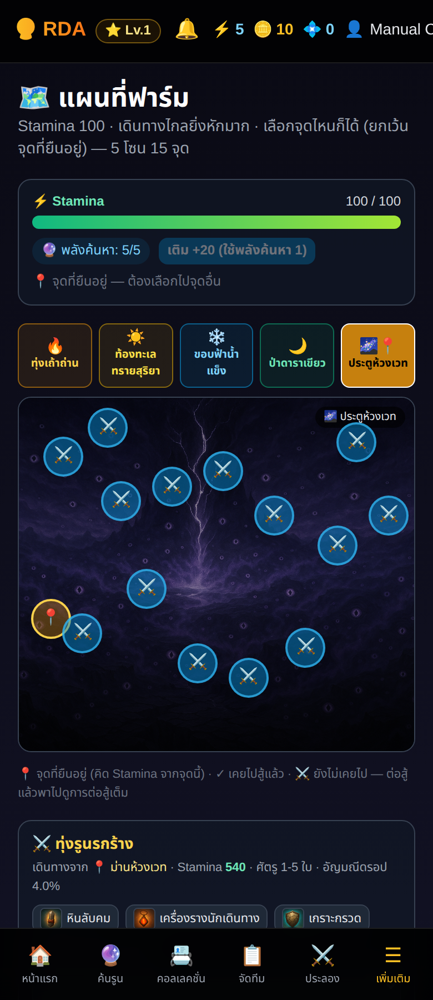
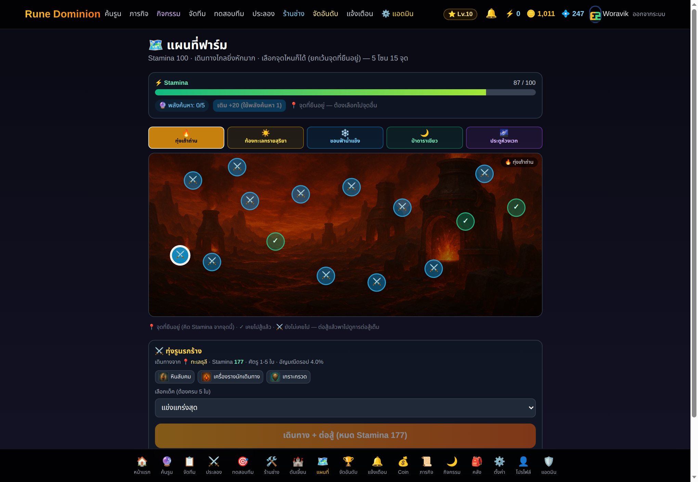
| รายการ | ค่า |
|---|---|
| Stamina สูงสุด | 100 (เต็มทุกวันเมื่อขึ้นวันใหม่) |
| ค่าเดินทาง | คิดตามระยะทางจริงจากจุดที่คุณยืนอยู่ไปยังจุดหมาย (ไกลมากหักมาก · ขั้นต่ำ 3) — ข้ามแผนที่ยิ่งหักมาก |
| เติม Stamina | ใช้ พลังค้นหา 1 หน่วย → +20 Stamina (ปุ่ม “เติม +20 (ใช้พลังค้นหา 1)”) |
| การเลือกจุด | ยืนที่จุดไหนก็เลือกไปจุดไหนก็ได้ ยกเว้นจุดที่ยืนอยู่ (ไม่มีเส้นทางบังคับ) |
| การต่อสู้ | เจอศัตรูสุ่ม 1–5 ใบ · ชนะได้รางวัล · แพ้ไม่ได้รางวัล |
🛠️ ร้านช่าง มี 2 แท็บ ชัดเจน: 🧪 คราฟต์ (ซื้อ/คราฟต์ไอเทมใหม่) และ 🛠 ตีบวก (อัปเกรดไอเทมที่มีอยู่) ไอเทมทุกชิ้นมี 3 ช่องใส่ — โจมตี (ATTACK) · ป้องกัน (DEFENSE) · สนับสนุน (SUPPORT) — การ์ด 1 ใบใส่ได้ช่องละ 1 ชิ้น และ สถานะของไอเทมบวกเข้าสถานะการ์ดจริงตอนต่อสู้/คิดพลังทีม
| วิธีได้ของ | จ่ายด้วยอะไร | ได้อะไร |
|---|---|---|
| ซื้อ (Buy) | 💠 Veil Shards อย่างเดียว | ไอเทมพื้นฐานบางรายการ |
| คราฟต์ (Craft) | 💠 Veil Shards + ✨ ฝุ่นเวท + 🪙 Coin | ไอเทม (ของแรงกว่าจะคราฟต์เท่านั้น) |
ของใหม่ที่ได้จะลงเป็นกอง +0 เสมอ · แท็บนี้โชว์ค่าพื้นฐานของไอเทม (ไม่ใช่ค่าที่ตีบวกแล้ว) และบอกว่าคุณ “มี ×N” / “ใส่อยู่ ×N” กี่ชิ้น
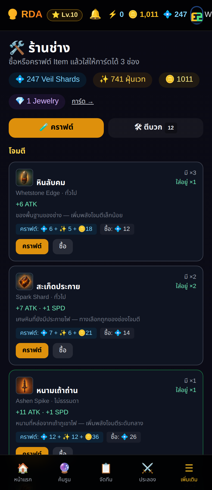
การตีบวกคือ เอาของที่มี 1 ชิ้นไปตีบวก ให้ชิ้นนั้นได้ระดับ +N (ไม่ใช่ทั้งกอง) ของชนิดเดียวกันแต่ต่างระดับจะแยกกองกัน เช่น “+0 ×3 · +2 ×1”
| รายการ | กติกา |
|---|---|
| ระดับสูงสุด | +15 · เพิ่มสถานะ +8% ของค่าพื้นฐานต่อระดับ (บวกตรง ไม่ทบต้น) ⇒ +15 ≈ ×2.2 |
| ใช้ของต่อครั้ง | 1 ชิ้น จากกองระดับนั้น (ชิ้นนั้นคือของที่ถูกตีบวก ของชิ้นอื่นในกองไม่เปลี่ยน) |
| โอกาสสำเร็จ | ดูตาราง 17.3 ด้านล่าง |
| ถ้าพลาด | ระดับ +1…+6 พลาด = ระดับคงเดิม · ระดับ +6 ขึ้นไป พลาด = หล่นลงมา +6 |
| +10 ขึ้นไป | ต้องใช้ 💎 Jewelry เพิ่ม (เป้า +10–+11 ใช้ 1 · +12–+13 ใช้ 2 · +14–+15 ใช้ 3) |
| ค่าใช้จ่ายต่อครั้ง | 🪙 Coin 15 × ระดับเป้าหมาย · ✨ ฝุ่นเวท 8 × ระดับเป้าหมาย |
| ไป +1 | +2 | +3 | +4 | +5 | +6 | +7 | +8 |
|---|---|---|---|---|---|---|---|
| 95% | 92% | 88% | 82% | 75% | 65% | 55% | 45% |
| +9 | +10 | +11 | +12 | +13 | +14 | +15 | |
| 35% | 25% | 18% | 13% | 9% | 6% | 4% |
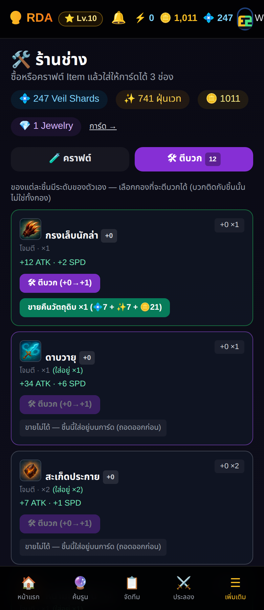
ไอเทมที่ยังไม่ใส่อยู่บนการ์ดขายคืนได้ โดยได้วัตถุดิบกลับมา 50% ของสูตรคราฟต์ (💠 Veil Shards + ✨ ฝุ่นเวท + 🪙 Coin) — ขายได้ทั้งจากหน้าร้านช่างและจากในกระเป๋า (บทที่ 18) · ขายคืนไม่มีทางกำไร (คืนไม่ถึง 100%) จึงกันการปั๊มของได้
| ช่อง | ตัวอย่างไอเทมพื้นฐาน → ของแรง |
|---|---|
| ⚔️ โจมตี | หินลับคม (+6 ATK) → ดาบไร้จันทร์ (+32 ATK +4 SPD) → เขี้ยวพายุ/ดาบฉีกสุญญตา |
| 🛡️ ป้องกัน | โล่ไม้โอ๊ก (+6 DEF +10 HP) → โล่ผู้เฝ้าม่าน (+55 DEF +95 HP) → โล่หัวใจไททัน/กำแพงโลกา |
| ✨ สนับสนุน | เครื่องรางว่องไว (+5 SPD +4 HP) → ตราเซลิน (+10 ทุกสถานะ) → เมล็ดพันธุ์โลก/เศษต้นกำเนิด |
เปิดเมนู 🎒 คลัง (กระเป๋า) จะเห็นครบในหน้าเดียว แบ่งเป็น 3 ส่วน
| 🪙 Coin | กดเพื่อไปหน้า Coin (ประวัติธุรกรรม) |
| 💠 Veil Shards | กดเพื่อไปร้านช่าง |
| ✨ ฝุ่นเวท | วัตถุดิบคราฟต์/ตีบวก |
ไอเทมที่ถืออยู่จะแยกทีละแถวตามระดับการตีบวก (+0 · +1 · +2 …) ไม่รวมเป็นชนิดเดียว แต่ละแถวบอก: สถานะที่เพิ่มให้การ์ด · จำนวนที่มี (×N) · การ์ดที่ไอเทมชิ้นนี้ใส่อยู่ (แสดงเป็นการ์ดย่อ กดดูได้) · ปุ่ม “ขายคืนวัตถุดิบ”
ของที่ได้จากกิจกรรม/รางวัลพิเศษ แยกเป็น 5 ประเภท พร้อมบอก “ที่มา” ของทุกชิ้น
| ประเภท | ตัวอย่าง |
|---|---|
| 🎴 การ์ดพิเศษ | การ์ดฉลองกิจกรรม (เช่น ผู้สังเกตการณ์รอยแยก) |
| 🎀 เครื่องประดับ | กรอบอวตาร (Avatar Frame) |
| 🏅 ฉายา | ฉายาเฉพาะกิจกรรม |
| ✨ ฝุ่นเวท | วัตถุดิบคราฟต์ |
| 📖 บทเนื้อเรื่อง | บทที่ปลดล็อกจากดาเมจชุมชน |
| 💎 Jewelry | อัญมณีตีบวก (ได้จากแผนที่ฟาร์ม) |
ทุกบัญชีมี เลเวล ที่เพิ่มขึ้นจากการเล่น (สูงสุด เลเวล 350) เลเวลเป็นตัวชี้ความก้าวหน้าแบบระยะยาว เลเวลคำนวณจาก EXP สะสมของคุณเสมอ (ไม่มีทางที่ตัวเลขเลเวลกับ EXP จะไม่ตรงกัน)
| กิจกรรม | EXP |
|---|---|
| ชนะการต่อสู้ (ทุกโหมด) | 30 |
| แพ้การต่อสู้ | 10 |
| ดันเจี้ยน — ต่อชั้นที่ยังไม่เคยผ่าน | 12 + 4 × ชั้น |
ช่วงเลเวลต้น ๆ ไต่เร็ว (เล่น 1–2 ศึกก็เลเวล 2) แต่ช่วงท้ายจะใช้ EXP มากขึ้นเรื่อย ๆ (ตั้งใจให้เป็นเป้าหมายระยะยาว)
| 🪙 Coin | 12 + 2 × เลเวล (ยิ่งเลเวลสูงยิ่งได้มาก) |
| ⚡ พลังงาน | เท่ากับเลขเลเวลที่ขึ้น (เลเวล 2 → ได้ 2 · เลเวล 3 → ได้ 3) |
| 🎁 ไอเทม | ได้ทุกช่วงเลเวล: ทุก 5 เลเวล (ของพื้นฐาน) · ทุก 10/25/50/100 เลเวล (ของหายากขึ้นตามลำดับ) · เลเวล 350 ได้รางวัลสูงสุดของเกม |
เลเวลยิ่งสูง ยิ่งมีโอกาสได้ไอเทมจากดันเจี้ยนมากขึ้น — 0% ที่เลเวล 1 ไล่ขึ้นเป็น +20% ที่เลเวลสูงสุด (350) หน้าดันเจี้ยนจะแสดงโบนัสนี้ให้เห็น (เช่น “🎁 โบนัสโอกาสดรอป Item จากเลเวล 10: +1%”)
เปิดเมนู 👤 โปรไฟล์ เพื่อดูข้อมูลจริงของบัญชีคุณทั้งหมด และตกแต่งตัวตนให้ไม่ซ้ำใคร
| ส่วน | มีอะไร |
|---|---|
| ตัวตน + อวตาร | ชื่อที่แสดง · @username · บทบาท (ผู้เล่น/แอดมิน) · วันที่เข้าร่วม · อวตาร + กรอบอวตาร + ฉายา |
| ⭐ เลเวล | เลเวล / 350 · แถบ EXP · EXP ที่มี · อีกกี่ EXP ถึงเลเวลถัดไป · โบนัสโอกาสดรอปไอเทม |
| 💰 ยอดเงินและพลัง | Coin · Veil Shards · ฝุ่นเวท · พลังค้นหา |
| 📊 สถิติการเล่น | ศึกที่เล่น / ชนะ / แพ้ / อัตราชนะ · ชนิดการ์ด · การ์ดทั้งหมด · การ์ดที่ปักหมุด · ทีม · ภารกิจที่รับรางวัล · ไอเทมในคลัง / ที่ใส่ |
| 🌙 กิจกรรมล่าสุด | คะแนนกิจกรรม · ดาเมจรวม · Veil Shards ที่ได้/ใช้ในกิจกรรม |
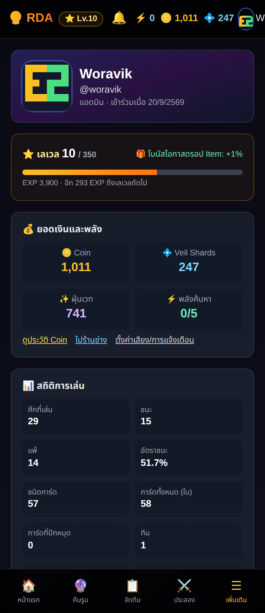
| แบบ | วิธีทำ |
|---|---|
| 😀 เลือกอิโมจิ | กดแท็บ “เลือกอิโมจิ” แล้วแตะอิโมจิที่ชอบ (มีให้เลือกหลายแบบ) — บันทึกทันที |
| 🎨 วาดเอง 6×6 | กดแท็บ “วาดเอง 6×6” → เลือกสีจากพาเลตต์ → แตะช่องเพื่อระบาย (มี 🧽 ยางลบ + 🧼 ล้างช่องทั้งหมด) → กด 💾 บันทึกภาพวาด |
ปุ่ม ♻️ ล้างอวตาร จะกลับไปใช้ไอคอน 👤 ค่าเริ่มต้น · อวตารใหม่จะขึ้นบนแถบหัวเว็บทันที ไม่ต้องรีเฟรช
เครื่องประดับคือ กรอบที่ล้อมอวตาร (แสดงทั้งหน้าโปรไฟล์และหัวเว็บ) ได้จากกิจกรรม (Milestone / Raid สูง / ร้านค้ากิจกรรม) — กด “ใส่” เพื่อใช้กรอบนั้น · กด “ถอด” เพื่อเลิกใช้
ฉายาจะแสดงต่อท้ายชื่อของคุณทั้งในหน้าโปรไฟล์ หัวเว็บ และตารางจัดอันดับ — กด “ตั้ง” เพื่อใช้ · “ถอด” เพื่อเลิกใช้ (ได้จาก Milestone/Raid ระดับสูงหรือร้านค้ากิจกรรม)
การ์ดพิเศษที่ได้จากกิจกรรม (Milestone) จะแสดงเป็นการ์ดย่อในหน้านี้ พร้อมรูปที่ระบบสร้างไว้ — เป็นของสะสมถาวร ไม่หายเมื่อจบฤดูกาล
เปิดเมนู 🏆 จัดอันดับ เพื่อเทียบกับผู้เล่นทั้งเซิร์ฟเวอร์ — ดูได้ทุกคน (ไม่ต้องล็อกอิน)
| แท็บ | จัดอันดับจาก | หน่วย |
|---|---|---|
| ⚔️ พลังทีม | พลังรวมทีมที่ดีที่สุดของคุณ (ATK+DEF+HP+SPD ของการ์ด 5 ใบ บวกไอเทมที่ใส่) | พลัง |
| 🃏 คะแนนสะสมการ์ด | rarity × จำนวนใบ (ทั่วไป ×1 · ไม่ธรรมดา ×2 · หายาก ×4 · มหากาพย์ ×8 · ตำนาน ×16 · เทพนิยาย ×32) | คะแนน |
| 🏆 ชนะศึก | จำนวนครั้งที่ชนะ (+ จำนวนศึกที่ลง) | ครั้ง |
| 🌙 คะแนนกิจกรรม | คะแนนรวมจากกิจกรรม (+ ดาเมจรวม) | คะแนน |
| 🪙 Coin | ยอด Coin ในกระเป๋า | Coin |
| ⭐ เลเวล (EXP) | EXP สะสม (เลเวลสูงสุด 350) | EXP |
| 🏰 ดันเจี้ยน (ชั้นรวม) | ผลรวมชั้นสูงสุดที่ผ่านของทุกดันเจี้ยน | ชั้น |
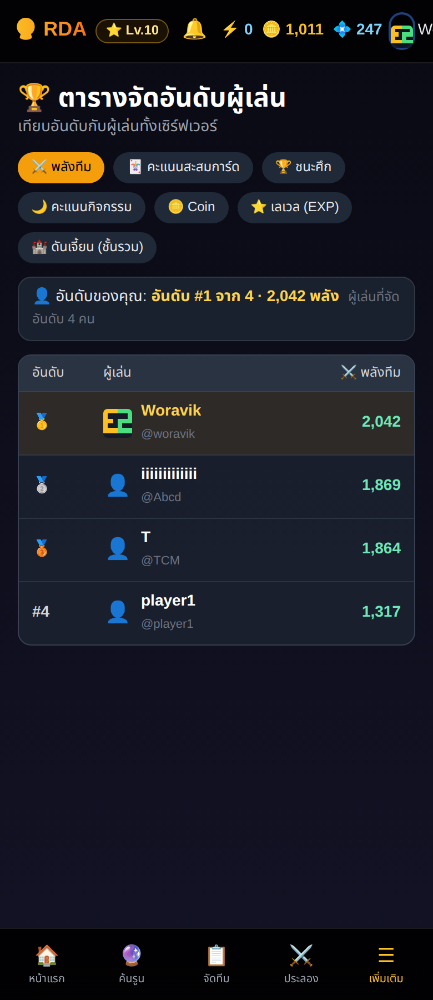
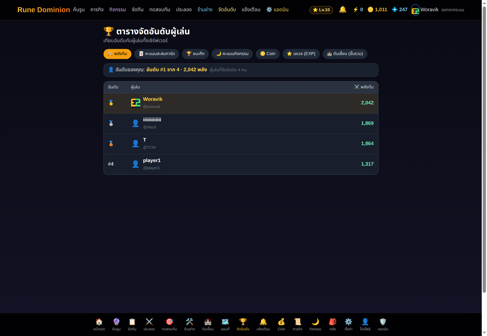
ระฆัง 🔔 บนแถบหัวเว็บแสดงจำนวนที่ยังไม่อ่าน กดเข้าไปที่ศูนย์การแจ้งเตือนเพื่อดูรายการทั้งหมด การแจ้งเตือนเป็นของบัญชีคุณเท่านั้น (ใครก็ไม่เห็นของคุณ)
| 📣 ประกาศ | ข่าวจากทีมงาน |
| 🎨 ภาพการ์ด | ภาพการ์ดสร้างเสร็จ/ล้มเหลว |
| ⚔️ ผลการต่อสู้ | สรุปผลหลังจบศึก |
| 🏟️ อารีน่า | มีคนท้าทาย · ได้เป็นแชมป์/รับรางวัล |
| 🌙 กิจกรรม | ถึงเป้า Milestone · ของรางวัลใหม่ |
| ⭐ ขึ้นเลเวล | ได้ Coin/พลังงาน/ไอเทมเมื่อขึ้นเลเวล |
| 🏰 ผลลุยดันเจี้ยน | ผลของชั้นที่เพิ่งลุย พร้อมรางวัลที่ได้ |
| 🔧 ระบบ | ข้อความระบบทั่วไป |
เลือกได้ว่าจะรับการแจ้งเตือนประเภทใด ที่ ⚙️ ตั้งค่า → 🔔 การแจ้งเตือน (บทผนวก ก)
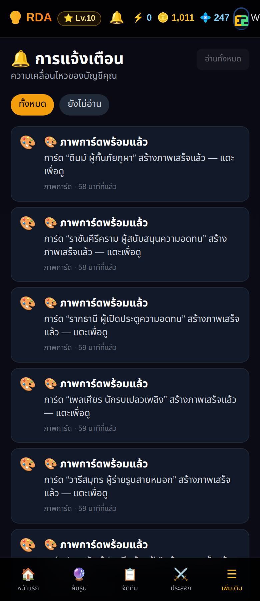
| เมนู | ทำอะไร |
|---|---|
| 📊 Dashboard | ภาพรวม: ผู้เล่นทั้งหมด · การ์ดทั้งหมด · การค้นพบรวม/วันนี้ · การต่อสู้รวม · เด็คทั้งหมด · เหรียญในระบบ · เควสที่เปิดใช้ · สถานะคิวภาพ |
| 🃏 การ์ด | จัดการข้อมูลการ์ด/งานศิลป์ |
| 📜 เควส | จัดการภารกิจ |
| 🎉 กิจกรรม | จัดการกิจกรรมฤดูกาล (หน้าหลักที่ใช้บ่อย — ดู 23.2) |
| 👥 ผู้เล่น | ดู/จัดการบัญชีผู้เล่น |
| 🖼️ ภาพ | จัดการคิวงานสร้างภาพการ์ด |
ใช้สร้าง/แก้ไข/เปิด-ปิด/ลบกิจกรรมฤดูกาล โดยแต่ละกิจกรรมมีข้อมูลที่ตั้งได้ดังนี้
| ชื่อ (ไทย) · ชื่อ (อังกฤษ) | ชื่อที่แสดงในเกม (ต้องกรอกให้ครบ) |
| คำอธิบาย (ไทย) · คำอธิบาย (อังกฤษ) | คำโปรยของกิจกรรม |
| ชนิด/โหมด | ตามฤดูกาล · รายสัปดาห์ · พิเศษ · ชุมชน |
| ช่วงเวลา | เริ่ม · สิ้นสุด · ช่วงเก็บตก (ไม่บังคับ) |
| สถานะ | กำลังจะมาถึง · กำลังเปิด · ช่วงเก็บตก · สิ้นสุดแล้ว (แสดงตามช่วงเวลาจริง) |
| สกุลรางวัล + รางวัลสูงสุด (ไม่บังคับ) | ชื่อสกุลรางวัลของกิจกรรม (เช่น Veil Shards) |
| เปิดใช้งานกิจกรรม | สวิตช์เปิด/ปิดกิจกรรม |
ปุ่มในแต่ละแถว: แก้ไข · ลบ (ยืนยันก่อนลบ) · เปิด/ปิด · และ ➕ สร้างกิจกรรมใหม่ — ตารางยังบอกจำนวน ผู้เข้าร่วม และช่วงเวลาของแต่ละกิจกรรม
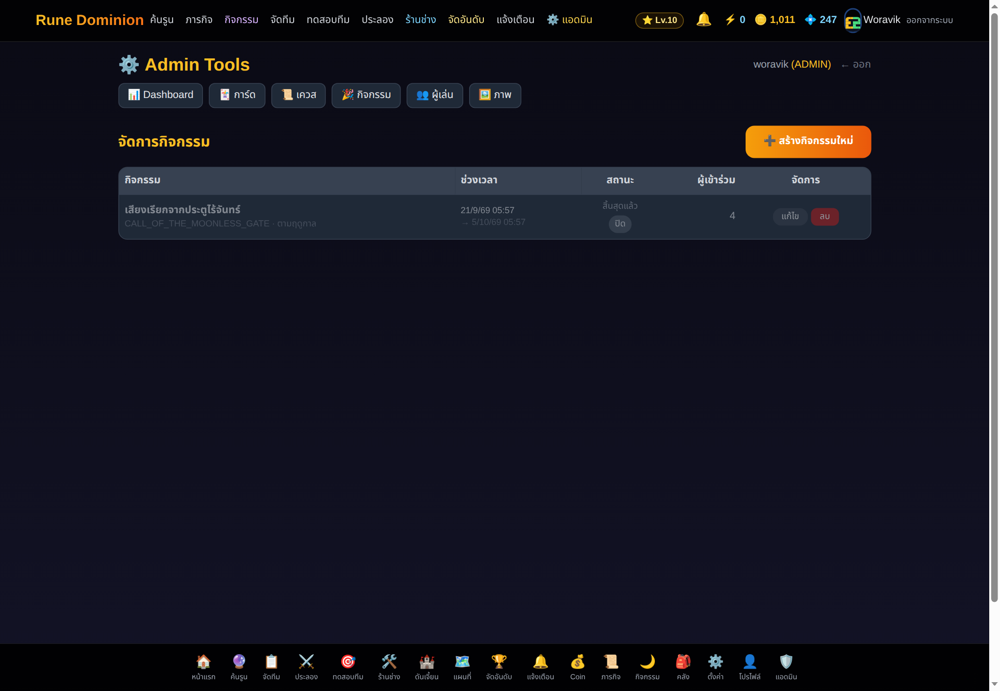
หน้าตั้งค่าแบ่งเป็น 5 หมวด: 🌐 ภาษา · 🔊 เสียง · 🔔 การแจ้งเตือน · 🧭 ช่วยเหลือ · ℹ️ เกี่ยวกับ
| ตัวเลือก | ผล |
|---|---|
| 🌐 ภาษา — ไทย / English | เปลี่ยนภาษาของเมนู ข้อความในเกม และการแจ้งเตือน — กดแล้วบันทึกทันที (ใช้ทั้งเครื่องนี้และบัญชี) |
| เสียงเอฟเฟกต์ (SFX) | เปิด/ปิดเสียงกดปุ่ม เปิดการ์ด และการต่อสู้ |
| เพลงประกอบ (Music) | เพลงธีมหลักของ Aetherra — เปิดไว้ให้ตั้งแต่แรก ปิดได้ถ้าต้องการเงียบ |
| เสียงบรรยากาศ (Ambience) | เสียงลมและประกายเบา ๆ ของแต่ละโซน (เปิดไว้ให้ตั้งแต่แรก) |
| ลดเอฟเฟกต์รุนแรง | เหมาะกับผู้ที่ไวต่อแสง/เสียง — ลดเสียงซ้อนและความดังลงครึ่งหนึ่ง |
| ระดับเสียง | ปรับ 0–100% (มีผลกับทุกชั้น: เอฟเฟกต์ เพลง บรรยากาศ) |
| ทดสอบเสียง | ปุ่มตัวอย่าง: ทดสอบเสียงรางวัล · ทดสอบเสียงต่อสู้ · ⚔️ ทดสอบเสียงดาบ · ✨ ทดสอบเสียงปล่อยสกอล · ทดสอบเสียงเพลง · ทดสอบเสียงบรรยากาศ |
| 🔔 การแจ้งเตือน | เลือกได้ว่าจะรับการแจ้งเตือนประเภทไหน: ภาพการ์ดสร้างเสร็จ · ผลการต่อสู้ · อารีน่า · กิจกรรมและรางวัล · ประกาศจากทีมงาน (ของบัญชีคุณเท่านั้น) + ปุ่ม “เปิดศูนย์การแจ้งเตือน” |
| 🧭 ช่วยเหลือ · เปิดคู่มือเริ่มต้นอีกครั้ง | เรียก onboarding 4 ขั้นกลับมาดูซ้ำ |
| ℹ️ เกี่ยวกับ | ชื่อเกม เวอร์ชัน และข้อความ “เหรียญในเกมใช้เล่นเท่านั้น” |
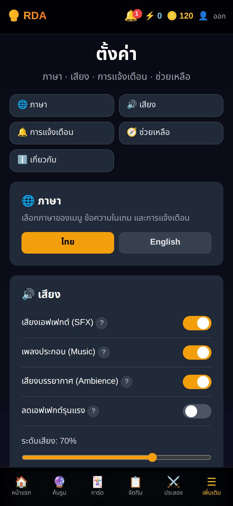
| อาการ | สาเหตุและวิธีแก้ |
|---|---|
| พลังค้นหาหมด กดถอดรหัสไม่ได้ | ใช้ครบ 5 ครั้งของวันแล้ว — รอข้ามวัน ระบบเติมให้เอง 5 หน่วย (ไม่ต้องกดรับ) |
| ค้นรูนแล้วได้การ์ดใบเดิม | เป็นพฤติกรรมปกติของเกม (ลำดับเดิม = การ์ดเดิม) และการ์ดจะถูกนับเป็น “อีกใบ” ให้ในคลัง (×N) |
| ขึ้นข้อความ “คำขอถี่เกินไป” | ระบบจำกัดความถี่เพื่อกันการกดรัว — รอสักครู่แล้วลองใหม่ |
| ส่งทีมเข้าห้องอารีน่าไม่ได้ | อาจครบเพดาน 20 ครั้ง/วัน หรือ Coin ไม่พอ (ค่าเข้า 10 Coin) — ตรวจที่หน้ากระเป๋า |
| เข้า Boss Raid ไม่ได้ | Veil Shards ไม่พอ (ต้องมี 10) หรือครบเพดาน 10 ครั้ง/วัน |
| กดรับรางวัลแล้วขึ้น “รับไปแล้ว” | รางวัลนั้นถูกรับสำเร็จไปก่อนหน้า — ตรวจได้ในหน้ากระเป๋า/คลัง |
| Coin ไม่พอ | ระบบจะบอกตรง ๆ ว่า “Coin ไม่เพียงพอ” — ทำภารกิจรายวันเพื่อเก็บ Coin หรือรอ Milestone ถัดไป |
| เสียงไม่ออก (รวมเพลง/บรรยากาศ) | แตะหน้าจอหนึ่งครั้งหลังเข้าหน้าเว็บ (เบราว์เซอร์บล็อกเสียงอัตโนมัติ) · ตรวจว่าระดับเสียงไม่ใช่ 0 และสวิตช์ที่หน้า ⚙️ ตั้งค่า เปิดอยู่ · ลองกดปุ่ม “ทดสอบเสียงเพลง” เพื่อยืนยัน |
| หน้าจอเด้ง error | กดปุ่ม “ลองใหม่” — ถ้ายังไม่หาย ให้แจ้งทีมงานพร้อมเวลาที่เกิดเหตุและภาพหน้าจอ |
| สู้ซ้ำแล้วผลไม่เหมือนเดิม | เป็นเรื่องปกติ: ดาเมจมีความแปรปรวนราว ±5% ในแต่ละศึก — ดูอัตราชนะจากการทดลองหลายครั้ง |
| ล็อกอินไม่ได้ | ตรวจชื่อผู้ใช้ (3–20 ตัว อังกฤษ/ตัวเลข/ขีดล่าง) และรหัสผ่าน (≥8 ตัว) · ถ้าล็อกอินครั้งสุดท้ายเกิน 7 วัน ให้เข้าสู่ระบบใหม่ |
| เข้าดันเจี้ยนไม่ได้ | ดันตามเวลา (🌙 รอยแยกไร้จันทร์ · ⚡ ยอดหอพายุ) เปิดเฉพาะช่วงที่กำหนด — ดูข้อความ “ปิดอยู่ — เข้าฟรี …” และนับถอยหลังบนการ์ดดัน · ดัน 💰 เหวลึกทองคำ ต้องมี Coin 35 |
| ลุยดันซ้ำแล้วไม่ได้รางวัล | เป็นเรื่องปกติ — ชั้นที่เคยชนะแล้วให้รางวัลเพียงครั้งแรก ลุยซ้ำได้แค่ซ้อม (ไม่มีฝุ่น/Shards/ไอเทม) |
| ตีบวกแล้วระดับลดลง | เกิดจากกติกาตีบวก: ระดับ +6 ขึ้นไปถ้าพลาดจะหล่นลงมา +6 (ระดับ +1…+6 พลาดแล้วคงเดิม) |
| ตีบวกไป +10 ขึ้นไปไม่ได้ | ต้องมี 💎 Jewelry เพิ่ม (เป้า +10–+11 ใช้ 1 · +12–+13 ใช้ 2 · +14–+15 ใช้ 3) — Jewelry หาได้จากแผนที่ฟาร์มเท่านั้น |
| ขายไอเทมไม่ได้ | ไอเทมชิ้นนั้นใส่การ์ดอยู่ — ถอดออกจากการ์ดก่อนจึงขายได้ |
| เติม Stamina ในแผนที่ไม่ได้ | พลังค้นหาหมด (ใช้ 1 หน่วย → +20 Stamina) หรือ Stamina เต็ม 100 อยู่แล้ว |
| อารีน่าดูไม่รีเฟรช | หน้าห้องอัปเดตเองทุก 20 วินาที (มีข้อความ “• อัปเดต HH:MM:SS” มุมขวา) · ต้องเลือกเด็คที่มีครบ 5 ใบก่อนจึงส่งทีมได้ |
| การแจ้งเตือนหายไปทันทีที่เปิด | เป็นพฤติกรรมที่ออกแบบไว้ — อ่านแล้วจะหายจาก “ยังไม่อ่าน” ทันที และตัวเลขบนระฆังลดลง (ดูทั้งหมดได้ในแท็บ “ทั้งหมด”) |
| คำ | ความหมาย |
|---|---|
| Rune Seeker | ผู้เล่นที่ปลุกการ์ดจากอักขระรูน |
| Rune (รูน) | จุดหนึ่งบนกระดาน 100×100 ที่ผู้เล่นเลือกเพื่อค้นหาการ์ด |
| การค้นพบ (Discovery) | การถอดรหัสรูน 1 ครั้ง = ได้การ์ด 1 ใบ (หรือใบเดิมถ้าลำดับซ้ำ) |
| ผู้ค้นพบคนแรก | ผู้เล่นที่ถอดรหัสลำดับนั้นเป็นคนแรกของเกม — ชื่อจะติดอยู่บนการ์ดใบนั้น |
| Deck / ทีม | การ์ด 5 ใบที่จัดวางในวงแหวน 5 ช่อง |
| คะแนนทีม | คะแนนที่คิดโบนัสตามบทบาทของแต่ละช่องแล้ว (ใช้เทียบความแข็งของทีม) |
| Auto Battle | การต่อสู้ที่เล่นให้อัตโนมัติ ผู้เล่นดูย้อนหลังได้ทุกแอ็กชัน |
| Mana (มานา) | พลังสะสมต่อเทิร์น (+20) ครบ 50 แล้วใช้สกิลได้ |
| Champion | แชมป์ปัจจุบันของห้องอารีน่า (ผู้ชนะคนล่าสุด) |
| Milestone | เป้าคะแนนที่ให้รางวัลเมื่อทำถึง |
| Veil Shards | สกุลเงินกิจกรรม ใช้เข้า Raid และซื้อของในร้านค้ากิจกรรม |
| Event Points | คะแนนกิจกรรมที่ได้จากการท้าบอส (ใช้เทียบ Milestone) |
| Grace Period | ช่วงเก็บตกหลังจบกิจกรรม (24 ชั่วโมง) ที่ยังเก็บของได้ |
| Stamina (แผนที่) | หลอดพลังเดินในแผนที่ฟาร์ม เต็ม 100/วัน หักตามระยะทางที่เดิน |
| ฝุ่นเวท (Crafting Dust ✨) | วัตถุดิบใช้คราฟต์และตีบวกไอเทม — ได้จากดันเจี้ยน แผนที่ กิจกรรม |
| ไอเทมช่าง (Item) | ของที่ใส่ให้การ์ดได้ 3 ช่อง (โจมตี/ป้องกัน/สนับสนุน) |
| คราฟต์ (Craft) | สร้างไอเทมด้วย Veil Shards + ฝุ่นเวท + Coin |
| ตีบวก (+N) / Enhance | อัปเกรดไอเทมทีละชิ้นให้ได้ระดับ +1 ถึง +15 (เพิ่มสถานะ 8% ต่อระดับ) |
| Jewelry (อัญมณีตีบวก 💎) | ของหายากที่ได้จากแผนที่ฟาร์ม ใช้ตีบวกไอเทมระดับ +10 ขึ้นไป |
| ดันเจี้ยน (Dungeon 🏰) | โหมดต่อสู้ไล่ชั้นเพื่อหาวัตถุดิบ (5 แห่ง · 25–40 ชั้น) |
| แผนที่ฟาร์ม (Map Farm 🗺️) | โหมดเดินเลือกจุดเพื่อเก็บวัตถุดิบ (5 โซน × 15 จุด) |
| EXP / เลเวล (Level ⭐) | ค่าประสบการณ์สะสม เลเวลสูงสุด 350 · เลเวลสูงขึ้นโอกาสดรอปไอเทมสูงขึ้น (สูงสุด +20%) |
| อวตาร (Avatar 👤) | รูปแทนตัวผู้เล่น เลือกอิโมจิหรือวาดเอง 6×6 |
| เครื่องประดับ / กรอบอวตาร | ของตกแต่งที่ล้อมอวตาร แสดงทั้งโปรไฟล์และหัวเว็บ |
| ฉายา (Title 🏅) | คำที่แสดงต่อท้ายชื่อผู้เล่น แสดงในโปรไฟล์ หัวเว็บ และตารางอันดับ |
| Admin Tools | เครื่องมือผู้ดูแล (ADMIN/MODERATOR) — จัดการการ์ด/เควส/กิจกรรม/ผู้เล่น/ภาพ |
| วัน | เป้าหมาย | ทำอะไรบ้าง |
|---|---|---|
| วันที่ 1 | รู้จักระบบ | สมัคร → ทำ onboarding 4 ขั้น → ใช้พลังค้นหาให้ครบ 5 ครั้ง → ดูการ์ดเริ่มต้น 5 ใบ → จัดทีมแรก |
| วันที่ 2 | เข้าใจการต่อสู้ | สู้กับบอท 2–3 ครั้ง เปิดเทปดูว่าใครตายก่อนและเพราะอะไร → ปรับทีมตามที่เห็น |
| วันที่ 3 | เก็บ Coin | ทำภารกิจรายวันครบ 3 ใบ (90 Coin) → เริ่มเห็นยอด Coin เกิน 200 |
| วันที่ 4 | จัดทีมตามบทบาท | จัดช่องโจมตี 2 (ATK สูง) · ป้องกัน 2 (DEF สูง) · สนับสนุน 1 (สกิลมานาแพง) → ดูคะแนนทีมเพิ่มขึ้น |
| วันที่ 5 | ลองอารีน่าครั้งแรก | เลือกห้องที่มีทีมแชมป์ธาตุที่เราชนะได้ → ส่งทีมเข้า 1 ครั้ง (10 Coin) → ดูเทปผล |
| วันที่ 6 | เข้า Boss Raid | เก็บ Veil Shards จากภารกิจกิจกรรม → เข้า Raid 1–3 ครั้ง → ดูว่าได้กี่คะแนน ใกล้ Milestone ไหน |
| วันที่ 7 | วางแผนระยะยาว | ทบทวนคลัง/กระเป๋า → ตั้งเป้า Milestone ส่วนตัวระดับ 2,000–5,000 คะแนน → ปรับทีมให้มี 4 ธาตุเพื่อโบนัสกิจกรรม |
| ขนาดกระดานรูน | 100 × 100 = 10,000 ตำแหน่ง |
| จำนวนรูนที่เลือกได้ต่อครั้ง | 8–16 ตำแหน่ง |
| พลังค้นหาเริ่มต้น / ต่อวัน | 5 / 5 |
| พลังค้นหาสูงสุดที่สะสมได้ | 10 |
| ค่าใช้จ่ายต่อการค้น 1 ครั้ง | 1 |
| การ์ดที่ได้ | ลำดับเดิม = การ์ดใบเดิมเสมอ |
| จำนวนการ์ดต่อทีม | 5 |
| ธาตุเดียวกันสูงสุดต่อทีม | 3 ใบ |
| เรตโบนัสช่อง โจมตี / ป้องกัน / สนับสนุน | ×1.0 (ATK) / ×1.2 (DEF) / ×1.6 (พลังสกิล) |
| โบนัสเมื่อบทบาทการ์ดตรงกับช่อง | +10% ของโบนัสช่องนั้น |
| ช่องสนับสนุนให้คะแนนจากอะไร | การ์ดที่สกิลใช้มานาแพงกว่า ได้คะแนนมากกว่า |
| ระดับความหายาก | โอกาส 40/30/15/9/4/2% (Common → Mythic) |
| รอบสูงสุด | 30 รอบ |
| มานาเริ่มต้น / ต่อรอบ / สูงสุด | 0 / +20 / 100 |
| มานาที่ใช้ต่อสกิล | 50 |
| ธาตุได้เปรียบ / เสียเปรียบ | +15% / −10% |
| ความแปรปรวนของดาเมจ | ราว ±5% ต่อการโจมตี |
| ดาเมจจากการเผาไหม้ | 5% ของ HP สูงสุด ต่อชั้น (สูงสุด 3 ชั้น) |
| การรักษา (น้ำ/แสง) | 20% ของ HP สูงสุด |
| โล่ลดดาเมจ / ระยะเวลา | 30% / 2 รอบ |
| ว่องไวเพิ่ม SPD / ระยะเวลา | +10 / 3 รอบ |
| อ่อนแอลด ATK / ระยะเวลา | 20% / 3 รอบ |
| ตัดสินผล | ทีมที่เหลือรอดก่อนชนะ · ครบ 30 รอบเทียบ HP รวมที่เหลือ |
| ค่าเปิดห้อง / ค่าเข้า | 30 / 10 Coin |
| คูลดาวน์เปิดห้อง / อายุห้อง | 5 นาที / 24 ชั่วโมง |
| ผู้เข้าร่วมสูงสุด / เพดานเข้า | 50 คน / 20 ครั้งต่อวัน |
| รางวัลแชมป์ | 100 Coin + 5 Coin ต่อผู้เข้าร่วม (สูงสุด 500 Coin) |
| ระยะกิจกรรม / ช่วงเก็บตก | 14 วัน / 24 ชั่วโมง |
| ค่าเข้า Raid / เพดานต่อวัน | 10 Veil Shards / 10 ครั้ง |
| รางวัลเข้า Raid / ชนะ | 2 / +5 Veil Shards |
| HP บอสรวม | 1,000,000 |
| คะแนนต่อการท้าบอส | 500–20,000 (+10% ถ้าใช้ ≥4 ธาตุ) |
| รางวัลภารกิจรายวัน / รายสัปดาห์ (รวม) | 90 Coin / 570 Coin |
| Coin เริ่มต้น | 100 |
| จำนวนดันเจี้ยน | 5 แห่ง (ฟรีตลอด 2 · ฟรีตามเวลา 2 · เหรียญ 1) |
| จำนวนชั้นต่อดัน | 25 / 28 / 28 / 30 / 40 |
| ช่วงเข้าฟรี (ดันตามเวลา) | 12:00–14:00 · 20:00–22:00 (รอยแยก) · 18:00–20:00 (ยอดหอพายุ) |
| ค่าเข้าดันเหรียญ | 35 Coin (แพ้คืน 50% + ฝุ่นเวท 1/4) |
| รางวัลดันเจี้ยน | ให้เมื่อชนะเท่านั้น (ชั้นที่ผ่านแล้วลุยซ้ำไม่ได้รางวัล) |
| บอสในชั้นลึก | 1 ตัว (ชั้น 1–10) · 2 ตัว (ชั้น 11+) · 3 ตัว (ชั้น 21+) |
| EXP จากดันเจี้ยน | 12 + 4 × ชั้น (เฉพาะชั้นที่ยังไม่เคยผ่าน) |
| แผนที่ฟาร์ม | 5 โซน × 15 จุด = 75 จุด |
| Stamina แผนที่ | สูงสุด 100 · หักตามระยะทาง (ขั้นต่ำ 3) · เติม 1 พลังค้นหา = +20 |
| ศัตรูในโซน | สุ่ม 1–5 ใบ · ชนะได้รางวัล แพ้ไม่ได้ |
| ช่องใส่ไอเทมต่อการ์ด | 3 ช่อง (โจมตี · ป้องกัน · สนับสนุน) ช่องละ 1 ชิ้น |
| วิธีได้ไอเทม | ซื้อด้วย Veil Shards · คราฟต์ด้วย Veil Shards + ฝุ่นเวท + Coin |
| ระดับตีบวกสูงสุด | +15 (เพิ่มสถานะ 8% ต่อระดับ → +15 ≈ ×2.2) |
| โอกาสสำเร็จตีบวก (+1→+15) | 95/92/88/82/75/65/55/45/35/25/18/13/9/6/4 % |
| พลาดแล้วระดับลด | +6 ขึ้นไป → หล่นลงมา +6 (ต่ำกว่านั้นคงเดิม) |
| ค่าใช้จ่ายตีบวกต่อครั้ง | Coin 15 × ระดับเป้าหมาย · ฝุ่นเวท 8 × ระดับเป้าหมาย |
| Jewelry ที่ต้องใช้ (+10 ขึ้นไป) | +10–11 = 1 · +12–13 = 2 · +14–15 = 3 |
| ขายไอเทมคืนร้าน | คืนวัตถุดิบ 50% ของสูตรคราฟต์ |
| ขายการ์ดคืนร้าน (Veil Shards) | 2/5/12/30/80/200 ตามความหายาก |
| เลเวลสูงสุด | 350 |
| EXP ชนะ/แพ้ศึก | 30 / 10 |
| รางวัลขึ้นเลเวล — Coin | 12 + 2 × เลเวล |
| รางวัลขึ้นเลเวล — พลังงาน | เท่ากับเลขเลเวล |
| ไอเทมจากเลเวล | ทุก 5 / 10 / 25 / 50 / 100 เลเวล (หายากขึ้นตามลำดับ) |
| โบนัสโอกาสดรอปไอเทม | 0% (Lv.1) → +20% (Lv.350) |
| หมวดจัดอันดับ | 7 หมวด (พลังทีม · คะแนนสะสมการ์ด · ชนะศึก · คะแนนกิจกรรม · Coin · เลเวล · ดันเจี้ยน) |
คู่มือการเล่นฉบับสมบูรณ์ — รุ่น Beta (ปรับปรุง 7 ตุลาคม 2026 · ครอบคลุมระบบจนถึง Phase 45)
จัดทำโดยทีมพัฒนา Rune Dominion Arena (E2SV)
ภาพประกอบทุกภาพถ่ายจากเกมจริง
“อักษรแรกเริ่มไม่ได้แตกสลายเพราะอุบัติเหตุ —
และบางส่วนของมันกำลังเรียกสิ่งที่ถูกผนึกไว้ให้ตื่นขึ้น”